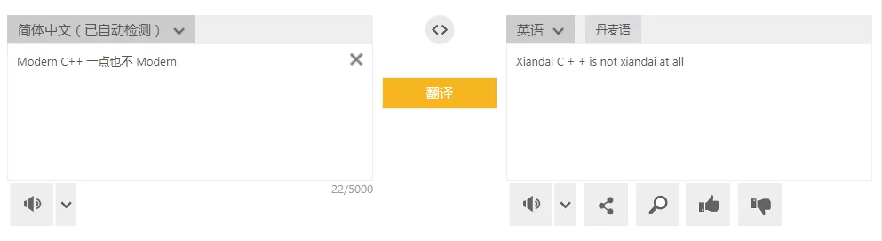

2021.03.12 15:52
Github的这个统计卡好有趣，不知不觉我的Star数居然达到了523…
github.com/hxhb主页的截图：
2021.03.10 15:44
我决定了要做什么事，就相信自己一定能做好。
2021.03.09 20:40
我以前常说，不能把自己的技能局限在某一种技术或者产品上，但是发现工作几年之后，业务接触越深入，越不可避免地会限制到了某种技术上，产生了一种焦虑感。
2021.03.09 15:18
CS工程界中的这些缩写真的是一言难尽，比如localization缩写成l10N，i18n是internationalization，居然是首位两个字母中间的字母数量…
2021.03.08 16:24
在商业引擎的应用实践中，有些需求需要对引擎修改，我觉得最好的状态不是直接把旧的实现抛弃，而是在基于原本的实现模式中使用最少的修改实现需要的功能。见了挺多硬造一个轮子出来的，其实有更简单和更合理的方法实现，要找到最关键的地方通过少量的修改来实现我们的需求，这样才有可能合并更新。
2021.03.05 16:17
对接内部的SDK太恶心了，文档不详细，配置居然还不是通用的，每个平台要改一遍。
2021.02.28 17:23
靠谱的关键在于风险控制，如何把风险保持在可控制的范围内提前解决，不能控制的风险提前发现提前准备，会避免遇到问题时手忙脚乱的情况。
2021.02.26 09:50
几个月前为HotPatcher提交了Epic MegaGrants的申请，本来以为过去了这么久已经没下文了，今天收到邮件说需要时间继续审核，是个不错的消息~
2021.02.23 16:42
有时候会问自己这一生需要什么样的生活？在想是不是对生活顾虑的太多，导致每天都过的很累，究其原因是害怕失败，害怕失败所付出的成本，想要每一步都不走错，是不是对生活太过谨慎了？
2021.02.23 16:28
在v2上看到一个讨论开源的帖子，记录下自己的回答：在没有大厂/大佬背书的前提下，个人开发者是否应该放弃以回馈社区、推动技术进步为目的的开源？
- 发现了一些需求，没有看到有很好的实现
- 自己尝试造了一个轮子，但是前期并不好用
- 经过一些迭代之后，可以初步实现自身最初的需求，尝试开源
- 宣传和推广非常重要，产出一些使用项目来解决问题的工程实践的方案，为项目积累起人气
- 根据社区反馈迭代项目，能够积极解决反馈问题，并且搭建起一个项目用户间交流的渠道
- 积极参与技术社区，参加一些行业会议推广自己的方案
这是我过去一年开源项目的一些想法，前段时间也思考过开源的问题：对开源的一些思考与想法
开源项目的生命力在于能够解决实际的痛点需求，也需要作者大量的时间进行更新迭代还有文档支持，其实不能太功利化地对待开源，让自己的作品能对别人产生价值，这种兴奋感不就是开源的意义吗？
2021.02.20 15:09
做能让自己影响力最大化的事情。
2021.02.20 10:30
新的一年工作生活开始了，为新的目标努力！
2021.02.03 15:25
在Github上给Unreal Engine提了第一个PR：EpicGames/UnrealEngine/pull/7737
2021.01.31 20:12
做了太多无意义的利弊分析和平衡，更想跟着自己的想法去做。
2021.01.31 11:32
耐心和坚持都是有限度的吧。
2021.01.30 19:58
我们听到的一切都是一个观点，不是事实。我们看见的一切都是一个视角，不是真相。
2021.01.29 23:34
我们因为好奇所获得的一切 最终会因为骄傲而受到玷污与败坏。
2021.01.28 17:10
说一样东西没有技术含量，其实是挖的不够深。
2021.01.25 23:38
面对未知的技术问题，最不应该的是胆怯，技术问题没有玄学，所有的问题一定都可以找到一个解答，只是取决于要付出的成本。面对难题，要有良好的拆解难题的思路，就算一开始并不知道最终的方案如何，在一步步的拆解和解决局部的问题过程中会逐渐修正解决最终问题的思路和方法，直到解决所有的局部问题组合成一套完整的方案，这是一个由点到线再到面的过程。这样来解决实际的工程问题的方法，才是能学习到更多东西的机会。
2021.01.25 23:28
越来越觉得，CS领域的大多数工作都是在处理工程问题，并不需要什么智商的优势来进行真正的研究工作，只需要有条理地分析问题的思考模式和大量的时间进行概念学习和工程练习，我觉得大量的时间和精力持续投入才是最难的，总是不知不觉浪费了大量时间却什么都没做。
2021.01.25 20:56
越来越觉得，编程语言只是表达思路的一种工具，不能过度地陷入到工具的细节中，大多数情况下需要着重关注的是思路的实现，遇到性能问题再针对性地分析，不能在没有需求的情况下沉迷绝对的技术细节，这样效率太差。
2021.01.25 14:34
哪些居高位的人，本质上也是普通人，只是所处的位置做出的决策会对很多人造成影响，依然有自己的纠结和压力，以审视个人的角度看，他们作为个体的差异其实和普通人差异并没有那么大，但是这样的人在所处位置的思考模式很值得学习。
2021.01.18 13:38
程序的交互设计真是门艺术，就算同样是阻塞逻辑，但是只要在前端表现层实现可以随意拖动的效果就不会有那种卡死焦虑的感觉。
2021.01.18 14:56
我觉得成长的最好的方法是：找一个比你强的人，研究他比你强在哪里，有哪些是他可以而你做不到的，有针对性地去提高自己，并且要适当地切换目标。
2021.01.16 09:54
Github的commit记录完美诠释了过去一年的工作状态…
2021.01.08 14:28
不要直接去考虑别人给你建议的答案的合理性，而是要思考得出这个答案的逻辑链条是非合理。是怎么样的一种分析方法来得出这个答案的，了解分析的过程比答案更重要。因为每个人对同一件事情的分析标准都是过往经历的一个集中体现，所以理解了的分析过程才能够理解答案的含义。
2021.01.07 09:58
有时候我们追寻的答案，往往只是一个可以说服自己的理由。
2021.01.04 20:58
越来越觉得，最难建立的是信任关系，别人如何相信你说的话、相信你有能力，并不是只靠嘴说就可以的。而是看你过往的经历，可辩别的实际的积累，或者更厉害的人、机构的对你的背书，它们都能够降低信任的成本。学历也是，本质也是为了降低筛选和信任的成本。
最难建立的是信任，信任却也是最容易被摧毁的。
2020.12.29 14:22
能让人觉得开心的，都是预期之外的惊喜吧。
2020.12.22 13:09
一项技术能有跨越二十年的应用场景也是很难的。怎么让技术能具有持久的生命力呢？我觉得首先要有持久的应用场景，就像FFMPEG在音视频领域的影响这样，并不只是应用层的技术，而是在音视频领域真正做出了开创性的成果。
2020.12.19 18:19
HotPatcher在Github上的start数破200了！
2020.12.18 14:12
重新激活了微信公众号，准备在上面发表一些技术和生活思考的记录：循迹研究室。
{kind=link}
2020.12.17 10:08
调整好心态，全新出发！
2020.12.13 20:19
不知道要做什么的时候，就把能做的做好吧。
2020.12.13 13:07
尼采说：一个人知道自己为什么而活，就能忍受任何一种生活。
2020.12.12 01:37
又一次不知道要做什么了…
以后想要过什么样的生活？以及处理好以前的经历，这是应该果断考虑和解决的事情，可是都没做好。
2020.12.01 10:53
2020 Unreal Open Day已经结束了，2020线上虚幻引擎技术开放日圆满落幕｜游戏引擎引领实时技术走向全行业。
做个简单的总结，我今年为UOD准备了一场技术主题的分享：UnrealOpenDay2020 虚幻引擎4全平台热更新方案 | 查利鹏。
很荣幸也获得了2020 Unreal Open Day的杰出社区贡献奖，非常感谢Epic的认可。
过去一个月为参加UOD做了很多准备工作，对我也有比较大的提升，期待明年！
2020.12.04 17:05
人的社会关系中，是需要不断地找更强的背书的，虽然背书行为对能力并没有没有影响，但是会让别人看待你的眼光就不一样，知名的人和机构愿意为你背书会降低信任的成本。
2020.11.27 09:27
抓到一条彩虹鱼~
2020.11.26 19:16
对接黑盒的服务实在是太蛋疼了…
2020.11.18 15:19
UOD议程持续公开中，今年有我的演讲哦~
2020.11.16 16:23
要不断的找新的目标啊，不然就会觉得很无聊。
2020.11.14 15:18
注册了个新域名，ue5lab.com，目前指向我的blog，准备等UE5发布时做一些UE5相关的内容。
2020.11.10 13:14
做什么事情都要有自己完全负责的准备，不能把责任推脱给“别人让我这么干的”，如果做事情之前自己没有正确地评判标准，那么出现问题也怪不得别人。
2020.11.08 17:21
重新看了一遍《回到未来》三部曲，很少有电影能同时满足我对过去、现在和未来的所有幻想，《回到未来》做到了，每次看都有一些新的想法。
2020.10.29 22:00
突然有种怅然若失的感觉，或许是尽力做了，但是没有得到相应的认可。
2020.10.27 14:37
做什么事情还是一鼓作气地搞完才是最好的， 不然一旦放下了就可能会搁置很久，想要再次捡起来需要更多的时间成本。
2020.10.24 22:23
去丽江玩了一周，玉龙雪山很好看，不过古镇什么的商业化太严重。
2020.10.16 13:12
我觉得罗翔老师新的视频对“上海名媛事件”说的非常好，每个人内心都有渴望恭维和认同的虚伪感，我也不例外，自省和反思是必要的。
我们在进行道德判断的时候，不要把自己排除在道德判断的范围以外，还是要严以律己，警惕自己内心的黑暗。
2020.10.15 08:37
高关注度往往伴随着高争议性，高争议性也容易带来高关注度。从媒体传播如何更广的角度看，制造矛盾冲突是重点。
2020.10.13 10:03
我认为中国的基础教育培养的只是跟随者而不是领导者，有意无意间地扼杀创造性和冒险精神，针对那些特立独行的人。从家长到老师，从上学到就业，都要求听话，顺从成为了评判好坏的标准。
2020.10.10 11:21
“谁是我们的敌人？谁是我们的朋友？这个问题是革命的首要问题。”这是毛主席在《中国社会各阶级的分析》中的话，我觉得十分重要，在平时的学习生活中也可以适用，当然并不是要搞阶级斗争。而是要时刻思考自己的优、劣势状态，如何集中自己的优势去化解自己的劣势，才是需要着重关注的首要问题。
2020.10.09 10:26
十一节后回来，有些想法发生了变化，可能只有在空间跨度这么大的情况下的对比才能感受到，以后的关注的重点是如何兼顾家庭和工作吧。
2020.10.01 17:52
突然翻到了这张照片，有点感慨，这是在读高中时用装在U盘中的Linux系统在网吧写代码。
现在工作生活都是曾经梦寐以求的环境，但却感受到那种渴望学习的热情消减了很多，当物质的生活丰富之后，就会这样吗？
2020.09.28 10:19
想到一个问题，为什么中国人看到老外都不好意思说自己的英语，担心说的不正宗发音不标准丢人，但是老外在中国说句蹩脚的“你好”，我们就赞不绝口觉得老外会说中文还说的这么好。我觉得民族自信不光要文化、历史这种群体自信，更重要的是每个人对自己都要自信。
2020.09.28 00:15
最近想搞ARKit，打包需要MacOS，又要开始折腾黑苹果了，回望下装系统的巅峰时刻:sunglasses:
2020.09.27 13:28
这几天被泄露的Windows XP和Windows Server 2003的代码：nt5src.7z
2020.09.25 16:35
技术人应该如何提升自己的竞争力呢？我觉得做技术不能仅仅局限于技术本身，应该站在产品的角度去思考技术，应该用技术去做出什么样的产品，解决什么样的问题。
2020.09.24 22:25
要避免鸵鸟心态，勇于发表意见（不是批判性的意见，而是技术性的意见）。虽然不出头可能不得罪人，但是在看起来就实在是太平庸了，一点特点都没有，遇到事情就是人云亦云。
2020.09.24 19:51
使用Lepton来编辑Gist很方便，终于不用每修改一点点都要用Hexo重新生成一遍了。刚用两天我已经不想再使用原来的方式了，不过图床是个要解决的问题，既要能够方便地导出，也要方便管理、并且最关键的是也要很容易迁移。把之前使用PicGo使用Github Pages的图床捡了起来，暂时用着还可以。
2020.09.24 19:28
吉卜力将在官网依次公开所有动画电影图片，可以免费下载：今月から、スタジオジブリ作品の場面写真の提供を開始します
2020.09.23 23:34
把我的iPad Air3升级iOS14之后，体验还不错，使用Apple Pencil更方便了，但是貌似掉电有点快。
2020.09.23 17:31
现在已经把Rider for unreal当作主力的工作IDE了，用起来非常爽，比VS要顺滑很多。
2020.09.22 21:22
现在每天都有很多想写的东西，可是没有那么多时间。
2020.09.17 23:11
坏事情会随着不好的预感如期而至，突然有种能够预见到了却避不开的感觉。
2020.09.17 11:55
Oculus Quest2虽然只是常规升级，没有特别亮眼的东西。价格和体验还是没有对手，买了买了。
2020.09.15 14:09
Oculus Quest2要发布了，虽然现在不做VR的产品了，但是还在继续关注VR的信息，等Quest2上市了要买一台。
2020.09.09 12:32
计划锻炼下身体，进行些减脂运动，最重要的还是管住嘴，迈开腿。
2020.08.30 20:22
编程是精巧的艺术，是庖丁解牛的尖刀，把需求分析透彻，把已有的东西了解清楚，掌握好清晰的脉络层次，才能实现刀刀剔骨，无一处多余、无一处浪费。要不断地提升自己的能力和见解才能够逐步接近这样的层面。
2020.08.25 23:29
时常觉得被沉没成本束缚住了手脚。
2020.08.25 00:00
以地事秦，犹抱薪救火，薪不尽，火不灭。
2020.08.13 09:29
体谅只能是发自内心的，而不能要求别人理解和体谅，也做不到。
2020.07.19 14:40
从我工作以来接触VR行业是比较久的了，从16年到19年，也算是经历了VR的风口和退潮，眼见他起高楼，眼见他宴宾客，又眼见他楼塌了。挺感慨的，做VR的内容，做好了挺难的，需要很强的技术和很厉害的idea，但是国内大多数做VR的都讲究做项目短平快，没有长线的资本支持，作品的质量不言而喻，回过头来看我觉得16年VR的爆发是资本炒作出来的，当时的VR软硬件水平远远没有达到可以普及C端的层面（直至现在也是如此，不过一体机VR的发展迅速）。
据我了解，目前还在做VR的大多都是在做政府和文旅的项目了，做VR游戏是很难回本的，而且在国内VR没有C端用户，B端又没办法形成很强的用户粘性，导致VR无法出圈，还在关注的都是圈内人。短期我个人对国内VR行业的发展并不看好，以五年的跨度来说，我比较看好Oculus，一体机VR一定是未来的趋势，但是就看下一波VR的爆发点在哪里，杀手级应用在什么，一定要利用VR的强沉浸感的优势来做出其他平台无法替代的产品。
2020.07.18 10:10
把握住自己能控制的事情，不能把希望寄托在别人身上。
2020.07.04 23:10
产品和技术的区别点在哪里呢？产品当然是需要技术来驱动支撑的，关键是对于技术人员而言产品和技术的边界在哪里。我觉得挺多程序员包括我在内，工作后了解了一些技术，但是并不能独立地做出产品，我觉得主要问题不是技术不够，而是很多时候陷入了技术至上思维，技术人只关注技术，不关注要做什么样的产品，为什么要做这样的产品，能做出什么样的产品，缺少对产品整体的概念。
我觉得产品是可以解决大众真实需求的工具，而技术则是一个个无法直接面向大众的技术功能点。如何把这些技术功能点组合起来成为可以解决现实需求的工具，这应该才是一个能称之为“产品”的东西吧。
2020.06.20 22:52
有时候惊喜真的会在不经意之间突然到来。
2020.06.06 22:58
感觉最近多了些浮燥气，还是要脚踏实地一些。
2020.06.06 16:13
搭了个UE4老wiki的镜像站：https://ue4wiki.imzlp.com/
2020.06.03 23:15
DroidCam这个工具还不错，在电脑上没摄像头，但又紧急需要用的时候比较方便。
2020.05.21 23:01
第一次录视频有点强迫症，来来回回录了几遍，有说错别字都不想放过然后重录，怎么都录不好。最后还是脸一沉一口气录完，虽然有点紧张也有写说错字的地方，但是感觉还算自然。
2020.05.26 09:08
不做错事很容易，能做正确的事很难。
2020.05.23 12:16
疫情过后，家中应该常备一些常用药品：
- 阿莫西林/头孢类
- 99感冒灵类
- 诺氟沙星
- 甘草片/咳特灵
- 碘伏类洗剂/医用棉签
- 牛黄解毒片/黄连上清片
- 口罩/创可贴
基本把感冒发烧拉肚子日常可能遇到的都能覆盖了，可以在不方便去诊所或者医院的时候服用，但是要严格按照规定剂量，身体突发不适还是要去医院。
2020.05.14 20:13
Epic发布了UE5的PS5的真机视频，好强！！！希望UE5会有文本化脚本的支持，如果是AngelScript之类的静态强类型脚本语言就更好了！
2020.05.05 21:16
放假的时间总过的很快，回到杭州了，在老家的生活更规律一些，每天起的很早，各种农活虽然很累人，但没有什么心理负担，工作久了偶尔换换脑子也挺好。
2020.05.01 22:36
今年的五一回老家了，到家后帮爸妈采了几个小时的芦笋，又回到了面朝黄土背朝天的日子，农村的生活就是这样，会把你的全部精力耗费在土地上而难以抽身去做其他的事情，体力劳动的性价比是最低的，但是心疼父母，只是希望自己不要陷入这种境地，只做眼前看到的事情不一定是好的选择。有战术也要有战略，有计划也要有执行力，希望自己能做的更好。
2020.04.21 22:32
觉得工作中处理问题比较重要的几点：
- 不明白的就要问，不能交流的稀里糊涂，不怕不懂，就怕不懂也不问；
- 敢于抛出问题；
- 高效解决问题优先；
2020.04.21 21:56
把文章或者对问题思考的回答发表在国内的网站上，虽然关注度会上升，但其实很有风险。因为国内的监管政策，有些东西不能说不能碰，有可能哪天平台说封就封了，这样在上面的数据就很麻烦了。所以不管经常去哪个平台，我都会更新我的博客，这才是我自己能够完全自主的地方。记segmentfault被要求关停整改时的想法。
2020.04.20 19:58
有时候会突然产生一种烦躁感，会觉得自己一直碌碌无为，生活好像是很忙，但似乎什么也没做到。
2020.04.19 17:32
Github上第一个被Merged的PR奉献给了腾讯的tencent/UnLua，记录一下：Tencent/UnLua/pull/158.
2020.04.12 12:01
网络上的这点事情，多吃瓜少站队。不能轻易地被煽动起民族主义情绪也不能简单地看到一些不公就做起”恨国党“，多去思考问题的原因而不是简单地评判结果。
2020.04.08 08:54
昨天Github Pages居然挂了….
2020.04.04 12:12
2020.04.04是国家公祭日，我们应该记得所有为疫情付出的人们，还有那些逝去的人，但更重要的是要进行反思和追责，怎么样才能够避免下一次这样的事情重演。
2020.03.27 09:40
从昨天到今天，Github Pages遭受SSL劫持，大量的部署在Github Pages上的静态博客国内无法访问。不过我的应该没有影响，我用了Cloudflare的SSL。
2020.03.21 22:10
今天知乎的关注达到了1000，以前我从没想过会有这么多人来关注我，只是自己写文章做笔记发在没几个人看的博客上，现在因为有人看并且能够帮助到别人，我觉得有价值。最近因为各种事情工作也比较忙，没有开新的文章了，希望博客不要荒废。
2020.03.20 09:20
昨天终于把因为疫情积攒的两个多月的头发给剪了，顿时感觉神清气爽，我觉得疫情过去最火爆的应该是理发店。
2020.03.08 23:25
编程对于我来说并不只是一份工作，而是能让我感受的乐趣和热爱东西。
2020.02.28 23:33
面试一个人最好的办法就是看他如何解决一个不会的问题。
2020.02.12 00:12
什么情况下都不能完全依赖外部的环境，不能把期待全部放到“政府会管的”。再强大的政府也不可能面面俱到地考虑到每个普通人生活的方方面面，这一点尤其在近期“武汉肺炎”的疫情下展露无遗。既要有plan A也要有plan B。
2020.02.10 21:11
最近有时候在想，程序员个体能够创造的最大的价值是什么？在工作中经常是按照计划实现功能，仿佛就是API Implementer，但是程序员创造出来的产品确实解决了很多实际的问题。我觉得问题的关键就是“功能”和产品之间的关系，怎么通过具体的技术组合去解决实际的问题。
所以，程序员不能停留在怎么去“实现功能”，要考虑怎么“创造和组合服务”，我觉得这才是技术工作者可以产生的最大的价值。
2020.02.10 20:07
首先要自信，才可以被人相信。但不能盲目自信，要在有事实根据的基础上自信。可以有傲骨，但不可有傲气。
2020.02.05 16:33
我相信人都需要为自己曾经的任性买单，但绝不是能够束缚一辈子的枷锁。过去的无法改变了，未来取决于现在。
2020.01.28 22:18
今年开工要到2.12号了，正月十七，好几年没有在家过元宵节了。但是没法出门禁足在家，其实也挺无聊的，找点事情看本书吧。
2020.01.28 11:37
今年这个年过的，希望疫情尽快控制住。
2020.01.17 09:58
昨天开了知乎专栏，把我最新的文章搬到知乎专栏里了，关注度还可以。在互联网社交时代，人人都喜欢一键关注和直接交流，可能博客的这种“严肃”阅读形式不太适合现在人们的需求了，后面我会同步更新知乎专栏和博客。
2020.01.02 23:20
不卑不亢真的是挺难做到的事。
2019.12.29 22:26
最近博客写的不多，不少东西堆在一块了。
2019.12.08 23:40
一忙起来写博客的时间就不多了，2019年还有不到一个月，之前挖的坑还不一定埋的完…
2019.12.08 14:39
Enpass推出自己的账户系统了，我之前在GooglePlay上购买的现在也支持在iOS上用了，真香。
2019.12.04 09:58
前段时间写的ExportNavigation插件被Unreal Engine Marketplace审核通过了，成功上架虚幻商城：ExportNavigation，我觉得平时还是可以多写一点插件的~
2019.11.27 23:10
年纪越大越能理解父亲的背影。
2019.11.24 20:40
写代码的时候只要把函数拆的足够细，就能够扩展出N多不同的功能。这几天在写一个UE热更版本资源追踪的管理方案，发现这一套东西扩展一下可以单独搞出来资源管理、版本控制以及热更管理的模块，就是写起来太费时间。
2019.11.15 22:40
使用Hexo部署博客，当琐碎的内容量多的时候管理起来有点麻烦。现在我notes一个页面都四万多字了，再加上图片、文档会自动加载，打开时有点卡，这还是已经把不少笔记内容分流到其他文章中去了，静态博客优化起来也有点麻烦。
2019.11.10 22:22
将坏掉的屋子砸掉重建比一直修修补补更牢靠，但是总会陷入纠结沉没成本而安于修修补补。
2019.11.08 23:18
微信实在是太流氓了，拦截了我博客的链接，申请解除时还需要提交一大堆的个人信息或者在网站的根目录添加一个微信指定的验证文件，添加了之后还一直无法验证，真垃圾。
2019.11.08 11:02
在VPS上拉取UE的代码，压缩后使用Dropbox同步回本机，可以节省很多的时间~
2019.11.02 10:50
怎么才20多岁就感觉没有年轻人的活力了呢？
2019.10.26 23:26
最近的状态很不好，有点迷茫，事情摆在面前会害怕自己的选择造成坏的结果，达不到到别人的期待，也实现不了自己的愿望。
2019.10.17 21:16
信用卡支付的美元居然不是按照支付时间的汇率算的，而是按照记账时间的汇率，这个汇率差在金额大点时差了好几百，太坑爹了。
2019.10.12 22:38
今天在Epic的商城买了好多的资源，发现使用paypal支付美员比直接用信用卡支付要高很多，一千刀左右使用paypal结算人民币比美员要高好几百，太坑了，以后外币也尽量不用paypal支付了。
2019.10.07 23:58
完美的十一假期，玩儿的很开心！
2019.09.28 20:34
写博客这几年，逐渐养成了记录、分类和整理的习惯。一是对技术的梳理，有很多内容当你没有去看的时候觉得很简单，但是当你真的去分析了去思考它为什么这么设计，就会发现很多新的之前忽略的点；二是锻炼一下文笔，可以更好的描述问题、交流和解决问题。我是已经习惯了在博客上记录一切了，这样的感觉非常好~
2019.09.28 10:57
最近在读巫宁坤先生的《一滴泪》，讲述文革期间自己与家庭之前的亲身遭遇的事情，读起来觉得很魔幻但却是血淋淋的现实，不亚于《1984》给我带来的震撼。在读的时候我不禁会想，如果我生在那个时代会怎么样呢？或许一样会被时代裹挟。文革已经结束了几十年，但是阶级斗争和民粹主义思潮依然还在，要警惕那些以阶级斗争为名行暴虐之实的行为，不要那么轻易被煽动，多一些冷静，多一些思辨和多一些对异见的宽容。
2019.09.25 13:54
VPNHotspot可以把Android的SS代理通过热点的分享给别人，连接热点即可翻墙，神器啊！
2019.09.14 11:34
我就想让生活简简单单地，读书写代码，有想去的地方两个人计划一块去，不折腾不抱怨，可是好像从来不会这么简单。
2019.09.11 10:13
高铁退改签的收费策略：
- 开车前15天（不含）以上退票的，不收取退票费；票面乘车站开车时间前48小时以上的按票价5%计，24小时以上、不足48小时的按票价10%计，不足24小时的按票价20%计。
- 开车前48小时～15天期间内，改签或变更到站至距开车15天以上的其他列车，又在距开车15天前退票的，仍核收5%的退票费。
- 办理车票改签或“变更到站”时，新车票票价低于原车票的，退还差额，对差额部分核收退票费并执行现行退票费标准。
- 上述计算的尾数以5角为单位，尾数小于2.5角的舍去、2.5角以上且小于7.5角的计为5角、7.5角以上的进为1元。退票费最低按2元计收。
- 改签后的车票乘车日期在春运期间的，退票时一律按开车时间前不足24小时标准核收退票费。
2019.09.04 19:37
不要吝啬对别人的认同与夸赞，语言的奖励能够振奋人心，觉得做的事情有价值。
2019.08.29 17:53
沟通不畅造成的误解比要沟通的问题更难解决。
2019.08.27 19:06
讨论不可以坚决地预设立场，不然就变成了辩论。
2019.08.24 15:56
今天看了Netflix的纪录片American Factory，讲述福耀玻璃在美国建厂的事情，体现出来的中美员工的思想差异和他们对于自己自身权益的追求与中国真的是差别很大。
虽然这样的思想可能不利于集中生产，造成组织松散，但是也是美国员工追求个体利益最大化的体现，文化思想不一样没有什么对错可指摘的。只是有点唏嘘：从另一个角度考虑中国也真的是靠劳动人民任劳任怨地从事劳动密集型的工作才能够在改革开放四十年取得那么大的经济成就啊。
2019.08.24 12:28
最近在读美国前财政部长鲍尔森的《与中国打交道》，写到了很多他与高层接触的商业上的事情和一个外国人对中国政府以及经济的理解，读这本书最大的感受是透过别人的眼睛看一看自己的世界会发现挺值得思考的问题。
2019.08.23 09:01
Google News的中文内容与英文内容的质量相比真是差了不止一个档次。
2019.08.16 9:00
在路上听到一个十几岁的小朋友在跟他爸爸眉飞色舞地讲黑客和白帽子的事情，突然想到以前我也有过这样，每个搞计算机的人曾经都有一个黑客梦吧~
2019.08.14 23:47
国内的这网络环境实在堪忧啊，在github上clone一个仓库，不走代理下半天才30%，在VPS下30s下完…
2019.07.23 23:52
今天尝试体验了一下UE的PixelStreaming：
使用WIFI连接感觉还算比较流畅，这个第三人称模板工程可以达到满帧(设置为60fps)，觉得5G普及以后应该是趋势，不过目前PixelStreaming是beta版本，还有一些问题。
2019.07.15 21:16
熟悉和习以为常恰恰是理性追问的大敌。理性往往在“熟悉”与“习以为常”面前停止了分析与追问，原因恰恰在于“我已经知道了”。
2019.07.14 20:38
《程序员的思维修炼：开发认知潜能的九堂课》最后还批判了一下Language Lawyer…
2019.07.14 11:00
黑苹果的MacOS经过我两周左右的试用，从日常使用上来看，MacOS确实很省心，软件生态也很好，而且OSX还是*UNIX，bash的体验比Windows/Linux使用体验上都要好。但是用来开发（使用虚幻引擎+Clion）总觉得差那么点意思，果然还是VS宇宙最强IDE啊。
2019.07.12 11:15
京东非自营的售后也太差了，还不如天猫。
2019.07.08 11:21
从小到大，我们一次又一次地被旁人这样教训：「嘘，别说了，小心点。况且这种事谁不知道啊，还要你说？说出来又有什么用呢？你有力量改变它吗？」久而久之，我们越来越习惯于把「你懂的……」挂在嘴边，习惯于对房间里的大象视而不见，选择性遗忘了一个我们其实早就知道的重要事实：「大声说出来」跟「彼此心照不宣」有着决定性的区别。我们不是没有力量。一条恰当的宣言，哪怕它的内容只不过是「我知道」这么简简单单的一句话，也有可能引起整个社会的信念结构的根本改变，让许许多多人断然行动起来。这就是我们每一个人的力量。
2019.06.30 09:03
苹果的软件生态是真的好，在iOS上的应用，在macOS上面可以无缝衔接，软件生态真的是苹果的最大优势啊。
2019.06.30 07:57
基于错误的例子得出的结果都是站不住脚的。
2019.06.29 18:08
双系统安装了macOS High Sierra，体验了下黑苹果，感觉体验还不错，装上Windows的虚拟机之后基本可以做为日常使用的主力机，但是开发还是要选择Windows。
- 注意安装macOS一定要选择不区分大小写的磁盘格式，不然会安装软件会出现问题（如OneDrive/EpicLauncher）
2019.06.29 11:08
最难的是把微小的习惯一直坚持下去，懒惰的时候难免会想，“就这样吧”、”又不差这一天“，但是意志力的区别就在于坚持与否，希望自己能坚持下去吧。
2019.06.23 23:43
iOS在iPad上的中文输入法是没有九宫格的，横屏打起字来十分不爽(自认为我的手已经够大了，但操作横屏的26键布局还是很吃力)，之后试用了Gboard和搜狗输入法以及讯飞输入法，最终选择的是讯飞，最重要的是它支持横屏时右手打字左手取词，十分的酸爽，而且讯飞的语音识别也十分精准,强烈推荐(不过英文输入法我还是用的iOS默认的，因为可以唤出1Password来填充密码)。
2019.06.22 23:47
虽然说罗技的Crayon和Apple Pencil使用的是相同的技术，基本没有延迟（这点体验和Pencil相同），但是Crayon不支持压感，这一点缺陷写的字看起来没有轻重，每一个笔画都是相同粗细的；而且因为Crayon是扁的，握持写字时不那么舒服的，Pencil就好很多了，两款笔我都试用过之后觉得苹果的Pencil还真是没办法被其他配件替代的，所以我就买了Apple Pencil，配合Notability写字真的超级爽…:)
2019.06.20 09:22
选择有时候比努力更重要。
2019.06.17 23:36
Apple Books和PDF Expert用来看书和技术文档实在是太方便了~
总结了一下iPad上超级好用的App：Apple Books/PDF Expert/RD Client/Termius/Documents/Notability/欧陆词典/Dash/Shadowrocket.
我还在iPad上面装了Google全家桶…
2019.06.16 07:24
买了iPad后基本就告别这些图书促销了…
2019.06.15 08:25
睡觉不用枕头对脖子还挺舒服的…
2019.06.14 08:17
自己的事情只有靠自己争取，不能盲目相信别人的许诺和保证。
2019.06.11 12:39
事情发生之后再抱怨还有什么用呢。反思和抱怨有区别。
2019.06.09 09:32
这两天买了个iPad，深度使用过才发现苹果的软件生态实在太强大了。
而且一定要用美区的appleid，因为有很多你懂的app国区没有，一些苹果自己的服务比如apple books也都被阉割了。软件好贵…
2019.06.07 09:03
又到了高考的时间了，毕业之后经历过才发现它的重要。
2019.06.05 07:24
知之为知之，不知为不知，是知也。
在技术上，对新内容的不懂很正常，关键是面对自己不懂的东西时的心态，决定了最重要的区别。
面对困难，推诿而过和迎难而上，或许都具有搞不定的不确定性，但是其中研究和学习的过程和面对困难的心态决定了在职场上是什么样的人，也决定了别人对你的看法。
2019.06.04 08:25
三十年前风骤起，三十年后叩人心！
2019.06.03 10:33
先解决能不能的问题，再考虑想不想的情况。
2019.05.30 21:32
获取知识的能力比知识本身更重要。
2019.05.28 21:48
有点担心自己是不是在过着温水煮青蛙的日子，安于现状荒废未来。
2019.05.26 00:17
现在Dropbox免费版本最大只能使用三台设备有点鸡肋了，而且还没有小容量的扩容方案，准备切换到OneDrive上了，只是OneDrive没有官方的Linux客户端，准备尝试一下ondrived-dev。
PS:onedrive-dev时基于webhook的方式，延迟比较大，准备再尝试一下rclone.
rclone配置完成之后可以使用命令，将远程的路径同步到本地：
1 | rclone -v sync $REMOTE_NAME:$REMOTE_PATH $LOCAL_PATH |
但是貌似rclone没有提供实时同步数据的方法，rclone并不是实时运行的。
一个最简单粗暴的办法(其实是懒得写cron)：
1 | // sync blog data from onedrive server |
方案就是先使用rclone把文件从OneDrive的服务器更新下来，然后再替换到blog的本地仓库(因为rclone更新会删除本地的.git)。
然后开机时在后台启动即可：
1 | nohup ~/onedrivesync >/dev/null 2>&1 & |
2019.05.25 10:20
我觉得Unreal比Unity最大的优势应该是Epic确实用Unreal做出了相当成功的游戏，在业务的锤炼中优化引擎更贴近业务现实，而貌似Unity引擎的开发者并不知道游戏开发中需要的是什么东西。
2019.05.24 19:24
要避免“自己有把锤子，看什么都是钉子”的情况。
2019.05.23 00:29
我常想稳妥地处理问题，但是有时却会在紧急的时候耽误事情。
2019.05.21 20:12
突然想到，自己有些事情还没想明白，有点惶恐做不好家庭生活中的角色。
2019.05.19 18:50
做什么东西，学什么知识还是都要深入地去做，搞清楚内在机制才重要，这样才不会陷入懵懵懂懂半猜半蒙的境地。
2019.05.19 08:53
在其他地方看到合伙创业还有这么个操作…
先用极低的注册资本注册一个公司，然后招呼大家来全部是合伙人一起把公司做起来，股份员工全部平分我仗义吧？！
公司稍具规模接纳融资时以原公司股权架构的问题自己直接去注册一个新公司，把融资灌入新公司，新老公司之间是投资关系，老公司投资占新公司股份 0.01%，所以老公司员工全部是新公司的股东！只是股份<0.01%而已嘛，新公司我一人独资，只把股份和期权分给未来可能对公司有贡献的员工，这样成功的洗掉老公司的“元老”，一片欣欣向荣！ B轮以及C轮重复以上流程，最终我一个人去美国敲钟，留下一帮拿着老公司期权的打工仔在办公室看我敲钟直播为我拍手叫好！
2019.05.15 08:21
生活品味和审美真的会随着年龄的变化而改变，不由自主会变成自己曾经看不惯的样子。
2019.05.05 09:43
这个五一过的很有意义，为了家庭努力！
2019.04.30 09:39
在认知和执行能力不足的情况下，结论和道理都是没有意义的。
2019.04.26 07:29
在考虑问题时要从最根本的需求触发，譬如要做A联想到要做BCD，但是有可能BCD都是伪需求。要时刻谨记的是“我究竟要做什么事情，达到什么样的目标”，避免陷入思维的误区。
2019.04.24 22:09
今年杭州的空气质量好差。
2019.04.21 16:55
高铁一等座座次是AF靠窗、CD靠过道，二等座座次是AF靠窗，CD靠过道，B在三人座中间。
2019.04.21 08:25
不要把选择的条件当结果。
2019.04.18 12:31
当一个人始终要在言语上胜过别人的时候，他说话的目的就不再是为了沟通，而是为了战胜别人。
2019.04.17 13:57
不要用战术上的勤奋掩盖战略上的懒惰。重点要增强自身的能力价值，拓展自己的生产可能性，把精力放到能够产生长远价值的事情上。
2019.04.15 23:17
有时候我也会怀疑，每天的忙碌真的是有意义的吗？
2019.04.14 21:05
最近大火的996的问题，我倒是觉得，工作最好是好的待遇+能够实现个人目标，有计划的奋斗倒也无可厚非，熬时间的加班坚决不可取。面对国内一些病态的996加班制度，以及面对任何不公正的待遇我们应该有选择不的权利。
2019.04.14 15:16
[左传·宣公四年]楚人献鼋于郑灵公。公子宋与子家将见。子公之食指动，以示子家，曰：”他日我如此，必尝异味。”及入，宰夫将解鼋，相视而笑。公问之，子家以告，及食大夫鼋，召子公而弗与也。子公怒，梁指于鼎，尝之而出。公怒，欲杀子公。子公与子家谋先。子家曰：”畜老，犹惮杀之，而况君乎？”反谮子家，子家惧而従之。夏，弑灵公。书曰：”郑公子归生弑其君夷。”权不足也。君子曰：”仁而不武，无能达也。”凡弑君，称君，君无道也；称臣，臣之罪也。
2019.04.13 23:21
自我怀疑确实挺打击自信的。
2019.04.10 23:28
和别人闲聊的话听一半就好了，有自己的想法和判断不要被别人干扰。
2019.04.08 13:41
清明节三天出去玩，天气很好，西塘的风景、杭州的宋城千古情节目都还不错。
2019.04.01 00:29
4.1号开始启用新的增值税率了（之前16%，之后13%），种草新iPad Air🤔.
2019.03.27 22:26
我发现大多程序员(当然也包括我在内)，不具备把技术转换为产品的能力。功能的实现是一回事，做出来产品是另一回事啊。
2019.03.26 07:45
在自己没有想清楚之前，不要想着去教导别人。追求的目标不一样所传授的经验就是“彼之经验，我之歧路”。
2019.03.20 22:16
初学一个新领域的知识所写出来的知识总结很容易变成“抄书”；初学时可能纯粹的知识点还没弄明白是什么意思，更遑论写出自己的特殊见解。
书读百遍其意自现，知识总结的“抄书”化也应该是新时代的“好记性不如烂笔头”吧。
2019.03.18 09:26
我觉得营销的本质不是解决需求，而是制造焦虑创造需求。
2019.03.17 13:02
谎言说的再多也不会成为真理，但谎言如果重复一千遍又不许别人戳穿，人们就会把它当成真理。——戈培尔
2019.03.16 13:16
简雍真是三国第一大段子手…
《三国志·卷三十八·蜀书八·许麋孙简伊秦传第八》时天寒禁酒，酿者有刑。吏于人家索得酿具，论者欲令作酒者同罚。雍与先主游观，见以男女行道，谓先主曰：“彼人欲行淫，何以不缚？”先主曰：“卿何以知之?”雍对曰：“彼有其具，与酿者同。”先主大笑，而原欲酿者。
2019.03.14 09:50
开发中的所有相关路径必须都是纯英文、无特殊符符号和空白符，不知道为什么很多人没有这个习惯，会造成很奇葩的问题。
2019.03.03 03:01
在解决一个问题之前先考虑清楚问题是否真的存在。
2019.02.26 00:48
JS的生态也太不稳定了，如果依赖库的作者在最新版本里瞎搞一下，npm install之后事情都搞不定了。——记在博客因为highlight.js而生成失败。
2019.02.24 15:12
书籍的腰封真的是一个十分鸡肋的东西，而且往往是醒目的大字“影响XXX的十大书籍”、“XXX倾情推荐”，没什么用途，读书的时候还十分碍事，所以我拿到书第一时间都是把腰封扔掉:)
2019.02.24 14:38
世界观来源于历史感，回望历史与仰望星空极为相似，但微光只是浮出水面、各自孤立的外显表象，真正促使其发生的内在结构与传导机制，则需要形成理论归纳推演而得。
2019.02.23 13:37
买到了《苏联检察院对5810例反苏维埃鼓动宣传活动案件的司法复查》这套书，前苏联的意识形态和言论审查之严厉十分魔幻(当下也是)，配合《1984》看，已经无法分辨哪个是现实哪个是小说了。
2019.02.19 09:27
最近发现翻身:中国一个村庄的革命纪实这本讲土改的书很不错，书中的有些细节颠覆了我的想象…
2019.02.17 17:25
毛泽东在1940年的《新民主主义论》中写道：
至於還有所謂“政體”問題，那是指的政權構成的形式問題，指的一定的社會階級取何種形式去組織那反對敵人保護自己的政權機關。沒有適當形式的政權機關，就不能代表國家。中國現在可以采取全國人民代表大會、省人民代表大會、縣人民代表大會、區人民代表大會直到鄉人民代表大會的系統，並由各級代表大會選舉政府。但必須實行無男女、信仰、財產、教育等差別的真正普遍平等的選舉制，才能適合於各革命階級在國家中的地位，適合於表現民意和指揮革命鬥爭，適合於新民主主義的精神。這種制度即是民主集中制。只有民主集中制的政府，才能充分地發揮一切革命人民的意誌，也才能最有力量地去反對革命的敵人。“非少數人所得而私”的精神，必須表現在政府和軍隊的組成中，如果沒有真正的民主制度，就不能達到這個目的，就叫做政體和國體不相適應。
结合后来的事，大概又是一例屠龙勇士变恶龙的故事吧。
2018.02.11 21:54
感觉这个年在家里待的好长，第一次自己操办了过年的很多事情。
2018.02.01 19:55
没有什么比“明白现实世界如何运作”并且“如何应对它”更重要的事。而你在这个过程中的心态，决定了所有差别。
2018.01.27 23:01
处理人与人的关系比写程序难一万倍。
2019.01.26 08:42
不要在普通关系的交流中透露过多自己的私事，而造成刻板的印象。
2019.01.22 00:55
实在不应该晚上喝茶的，躺床上好久还是睡不着🙄
2019.01.21 21:55
每个人的性格都决定了当前的境遇。
2019.01.19 21:19
取乎其上，得乎其中；取乎其中，得乎其下；取乎其下，则无所得矣。
2019.01.18 22:34
今天年会，从来没有中过奖的中奖绝缘体路过…
2019.01.13 23:02
所谓竞争，不是说一个行业有很多企业，而是政府允许自由进入。
2019.01.13 20:36
这个周末没做什么特别的事，就只是把博客的主题布局啥的根据喜好改了一下，换个Style换个心情~
2019.01.11 22:30
最近读一些经济学相关的书和文章，发现亚当斯密的理论(或者说他所整理的经济学体系)影响深远。
2019.01.01 21:04
我发现网络上争论的缘由，大多是在历史、政治、对人物的评价等个人价值观表达上的相左意见。
价值观和思维方式这个东西是没办法辩论出胜负的，只能在互相认为对方是傻逼中收场，而且往往辩论的双方思维都不在一个点上，所以这种辩论基本没有意义，只能是浪费自己的时间。我要避免这样的事情，只讨论有对错的技术问题，不讨论没对错的价值观问题。
2019.01.01 18:27
今天折腾了一下Magisk，这个框架还不错，就是支持的模块现在还不太多。
2019.01.01 10:55
2019年，新征程新目标！
2018.12.17 21:57
还从没有过公有制土地土地的国家收过房地产税，没有私人住房凭什么收你房产税。
房产税和地产税合并是51年出台的政策 是因为公私合营之后没有私有产权住房了，都是公有的还收什么房产税。财产税的基本法理是财产归我才能收我财产税，财产不归我你凭什么收我财产税。
其实物业税和服务性质和房产税大体相同，香港收的就是物业税。教育、公共治安、交通都应该是房地产税的主要用途。
但是市政基础设施费 交通管理费也都在收，哪儿去了？不能为了收税硬造个名目出来，要看收税的用途，不能重复多收。
2018.12.14 09:38
看到一些人吹捧厉害了我的国和看到祖国这么流氓我就放心了，说实话挺可悲的。
2018.12.02 13:39
大多数无意义的辩论都变成了想要说服对方，很浪费时间啊。正是我认识到自己所谓的“常识”往往是错的，所以我才不会以常识和揣测中思考事情，避免只看到“局部的真理”。而且事情的结果并非是只是对或者错，也没有那么绝对的事情，这是思考方式的差异。讨论的目的在于交流相互之间具有共识的可信消息，不然就是《夜行船》中的故事了。
2018.11.27 22:52
人思考问题的方式是如此地差异，在我看来正确的你认为却是大错特错。
2018.11.24 13:13
在项目中出了问题很正常，大家一起讨论问题的原因和解决方案，不要将讨论问题搞成落实责任的倾向 。
2018.11.22 11:12
人呢还是不要那么大嘴巴，要能藏得下事情。如果告诉别人你要做什么，那应该是你真的已经决定了做什么，而不是你想要准备做什么。
因为如果表达的是你想要做什么，还处于Thinking这一过程，过早的说出来会提高人对你做这件事情的心理预期。说了出来但是你没有做到，会造成你说的话都不靠谱的印象，这应该就是现实中的狼来了。
我碰到过不少这样的人，我也对他们有这种印象，我自己要避免。
2018.11.21 00:10
人啊，最重要的是做个有用的人，让别人依赖你的工作是你产生的社会价值。如果别人不需要你，再真诚也是没用的，只能算是真诚的庸人。而且不对别人产生价值，别人自然也就不会给你尊重。
这个世界的所有社会关系，本质都是供需关系。
2018.11.18 22:06
晚睡真的很不好，前几天作息规律脸上才下去的疙瘩在昨天晚睡的摧残下又回来了..:(
还是尽量在十一点半之前睡觉吧…
2018.11.18 18:06
最近沉迷做饭无法自拔:)
2018.11.16 11:46
这两天测试使用威步(wibu)的加密方案，一种是CodeMeter是新版的，一种是WibuKey是旧版的，最坑爹的是，他们官网WibuKey的SDK中的AxProtector还停留在很久的版本，加密会有问题，换成CodeMeter的SDK版本就会装上最新版的AxProtector，就可以了。
2018.11.10 16:42
买了个阿里云的ECS服务器，1核2G内存1M带宽，三年298，拿来跑frp还行吧。
也是醉了，双十一别人都剁手衣服啥的，我就买了个服务器:)
2018.11.07 22:30
上班写业务，尤其是游戏业务，就是搬砖。现在平时研究的东西很多都用不到，我只是觉得好玩，想搞明白原理，想知道这些东西在计算机里面为什么是这样。有时候也在想，弄这玩意有啥意义呢，很难在业务中直接表现出来价值。现在觉得吧，只有拓展深度、知道了原理才能更快的发现和解决出现的问题。而且也不仅仅把自己局限在业务里。
如果只了解手头的业务我感觉也就是一年经验用了三年而已，要废啊。
2018.11.06 14:17
如果要管理博客里的相互引用好烦啊，比如一段文字，我在A文章里写了，但是想要直接在B文章里引用A文章里的这段话，现在是直接拷贝过来一份，很不方便。
2018.11.05 20:51
真是不能完全依靠移动支付啊，还是要随身带点现金，手机没电就GG了。
2018.10.24 17:42
说程序员需要鼓励师 一是歧视程序员 二是歧视女性。程序员就TM不是正常人了吗，瞎几把扯淡。
2018.10.22 22:56
我发现我最大的优点和最大的缺点都是脾气太好了。
2018.10.17 11:44
只有掌握了信息，才掌握了力量。
2018.10.17 09:21
要认识到父辈思维和格局的局限性，理性地看待建议。
2018.10.15 09:19
前两天买了辆电动车，上下班路上通勤方便了许多。
2018.10.13 13:44
接造梦的SDK真是日狗了，验证失败直接把当前游戏进程杀了。
而且会在Token验证成功之后继续冒出奇奇怪怪但并没有办法从代码得到的错误，依然会把进程杀了…
2018.10.10 11:55
当问题的讨论从知识的交流变成了为了说服对方从而证明自己的正确，那么讨论也就没有必要了。
2018.10.05 09:35
在农村的生活会让我忘掉生存的意义，重复无意义的农活会让我感到无望。
2018.10.04 10:29
指令和数据是应用上的概念。在内存或磁盘上，指令和数据没有任何区别，都是二进制数据。CPU在工作的时候把有的信息看作指令，有的信息看作数据，为同样的信息赋予了不同的意义。就像围棋的棋子，在棋盒里的时候没有任何区别，在对弈的时候就有了不同的意义。
2018.10.02 14:47
大半年没用过我电脑居然把开机密码给忘了，还好我有随身带优盘的习惯进PE给重置了。
2018.10.02 19:53
在农村靠种地生活真的是面朝黄土背朝天地土里刨活，而且粮食作物没有产生规模效应，种植成本太高了，单位收益比很低。和城市的社会资源差了不是一星半点，如果能留在外边我就不想回来农村。
2018.09.24 22:46
力微休负重，言轻莫劝人。
2018.09.10 08:22
市场缺不缺钱不是由资本存量决定的，而是由于资本的投资回报决定的。——记在余额宝七日年化3.1180%
2018.09.19 15:25
关于前段时间中国援助/投资非洲的600亿美元，网上骂声一片，谈谈我自己的看法。
首先，我觉得也该骂也不该骂，这个问题要从两个不同的方向去分析。
不该骂的是：第一，600亿的投资非洲并不是现金六百亿美元的无偿援助，无偿援助只是其中的一小部分，但是具体无偿规模有多大并没有披露。
第二，这类的国外投资主要是要消化国内的过剩产能，实际上就是贷款给你们，但是这些钱还要我们来赚，再者就是增加中国的国际影响力。还有就是毛衣战期间想要扩大中国产品的出口市场，期望降低中国出口商品对于美国市场的依赖(不过貌似是行不通的。
该骂的一点是，历来中国投资非洲收益都是很低的，其实并不能解决中国产能过剩的问题。而且，领导人一高兴就减免贷款或者延长贷款的年限…..而且非洲政局也不稳定，给非洲兄弟的大礼包这也都是老百姓的血汗钱，总的来看非洲撒币和打水漂差不太多…..
2018.09.03 22:42
在我看来，中国是以最集权的行政为被统治的人民提供社会安逸的最好代表。一些旅行家告诉我说：中国人有安宁而无幸福，有百业而无进步，有稳劲而无闯劲，有严格的制度而无公共的品德。——托克维尔《论美国的民主·上卷》 1835年出版
对中国人的描述这点来看，1835年和2018年好像也没什么区别。
2018.09.02 17:22
分析一件事情的背后推动者，要看谁受益。
2018.08.26 22:38
读《论美国的民主》，发现美国和中国真的从根子上就不一样。美国式民主有其独特的历史际遇和时代条件，与中国从思想与民情习惯的根源就不一样，当然不能照搬今日美国之民主。现在我对中国民主也没有任何信心。
在目前看到的部分中，作者的民主核心就是平等，平等比自由更重要，并非是名义上的人人平等，而是教育、社会关系、每个个体具有同等的权力的人民主权原则，这样的基本原则的反哺性才造就了美国社会。
另：《社会契约论》《中国国家治理的制度逻辑》《论美国的民主》三本连读，可以通过《社会契约论》对照部分理论概念，以及通过《中国国家治理的制度逻辑》从社会学上来对比中美的统治手段的不同之处，效果更佳。
2018.08.24 11:18
很多命令说是现用现查但也是建立在对命令有个大概了解的基础上，查具体的参数细节，这样效率比较高。一脸懵逼的情况下查资料大多都是在浪费时间，因为没找到目标方向，只是瞎查。
2018.08.23 10:18
我觉得中国这些聚众的罢工事件或者上访事件想要诉求得到满足必须要满足以下几个条件：
0. 极其强大的组织动员能力
- 波及到尽可能多的人，产生巨大的舆论效应
- 瞬间瘫痪掉社会的正常运转，避免ZF部门来腾出手分化组织内部
这么算来，近年来唯一一次勉强算得上成功的只有重庆的出租车司机的罢工那件事了…
其他什么退役老兵上访 货车司机罢工都达不到诉求的目的就被分化了….
2018.08.12 14:05
中国这么大的人口规模，这么大规模的内需市场，现在实体产业萎靡、内需不振，除了房地产就没能拿得出手的了。搞成这个样子，真的是一手好牌打烂了。
2018.08.05 13:24
这届的反腐可谓”精准反腐”，目的嘛，自然是为了打击政见异己者。
2018.08.05 13:23
这几天出差在上海参展ChinaJoy的展会，感觉上海的生活节奏和商业氛围都比杭州要高不少。不过ChinaJoy感觉也没什么太大亮点，C端多是电竞展示和卖周边的，游戏体验排队超多人；B端人相比少一点，多是商务的人来，很多的推广、发行、渠道、联运的公司。
另：这几天碰到的成都的美术外包公司是真多…
2018.07.31 22:09
李永乐老师最近的这个视频挺实用的：贷款买房，急用钱？利息怎么算？不要被忽悠了！李永乐老师讲等额本金和等额本息算法。
2018.07.31 21:50
今天听了一下高善文在山西证券30周年的演讲，提到了一个十分有意思的话题：小平同志的对越战争是中国改革开放的投名状。
2018.07.31 07:46
蚂蚁不能学大象走路，要认清自己所属的阶段，因地制宜才行啊。
2018.07.30 12:27
昔日有一僧人与一士子同宿夜航船。士子高谈阔论，僧畏慑，拳足而寝。僧人听其语有破绽，乃曰：“请问相公，澹台灭明是一个人、两个人?”士子曰：“是两个人”。僧曰：“这等尧舜是一个人、两个人?”士子曰：“自然是一个人!”僧乃笑曰：“这等说来，且待小僧伸伸脚。——夜航船
2018.07.29 09:55
如果你不想让别人做一件事，就提高做这件事的成本。
2018.07.28 19:54
我不怕生活的辛苦和艰难，只怕生活的抱怨。
2018.07.25 12:08
在中国，宣传就是把别人做的好的事一律保密，然后自己意淫在强国的梦里。
2018.07.15 07:16
昨天看了《我不是药神》，又在微博看到这个(近5000元一瓶的救命药 已纳入医保，为何在医院买不到？)，有句感慨：电影艺术化了结局。
现实中这种救命药进医保决不意味着买的到，恰恰相反，进了医保本来花钱买的到的药也可能在医院买不到了。因为中国的医保资金缺口很大，而中国的医保政策是低标准广覆盖，所以医院的医保压力也很大，每年的医保资金是有限的，政策上来讲不可能说大部分医保资金用在了一小撮人身上，所以很多情况下是医院和医生只能在药占比上做文章，要么是让去外面买耗材要么是开一些没用的保健品来填医保资金的窟窿。
这部电影是不错啊，而且还是国内极少的社会题材，希望这类电影越多越好。不过电影里太多艺术化改编，或许也是由于要迎合正能量方便过审的原因，但是实际上买药贵买药难的现实问题现在几乎是无解的，一定要了解电影里的背后深层次的几个问题：1.为什么正版药那么贵；2.为什么印度药便宜；3.中国能不能仿；3.为什么中国不能仿；3.中国不能仿为什么不能从印度进口；4.医保政策为什么不能及时跟进；5.医保预算为什么不能扩大 等等一系列问题，而这些问题中的任何一个都触及无数人的利益，触动人的利益远比触动人的灵魂还难。只有了解了这个问题背后的这些原因才能了解问题真正出在那里，任何社会问题都不是单一的问题，而任何一个都不是可以轻易解决的，医改任重道远啊。
2018.07.13 22:40
想了想如果房地产崩溃了真是可怕。
五百万的房子，贷款三百万，房子抵押给银行，万一房市崩了，抵押给银行的房子只值50W了，银行要求补充抵押物的时候，资不抵债就是上天台的时候啊。日本是前车之鉴。
但是我也没房没贷款担心个卵…
不过真是越来越觉得中国房地产就是一种庞氏骗局。根据我最近了解的货币化棚改调整和房地产厂商的去库存高周转信息来看，我觉得杭州房市未来一两年要横盘。感觉现在杭州是政府现在压着宁愿现在涨不上去也怕以后跌得惨。现在好多新盘和周围房价倒挂严重，附近小区三四万，新开盘的两万。而且过去一两年拆迁的几万户过一两年也该入市了…
最近也想了一下，杭州现在没有发展为一线城市的潜力…
没有北京的首都政治优势、没有深圳的改革开放制度优势、也没有上海的地缘和经济优势…其实主要是靠阿里网易系撑起杭州计算机发展一片天….而且商业氛围也一般。冷静想一下，杭州这点是比不上其他一线城市的。生活倒是比较爽…
2018.07.13 00:46
面对选择更重要的是要有自己的决断，不能被别人轻易影响。也要想清楚选择会带来的后果，这样才不会在结果到来时后悔。分析各种行为的利弊结果综合考量才是面对选择的最佳方式。
2018.07.09 20:28
客观地给自己一个评价：耐心有余，坚持不足，缺乏决断。
2018.07.09 09:36
不要盲目赞同别人说的话，也不要随意随声附和别人的意见。交浅言深都是给自己埋的坑。
2018.07.07 09:08
古代皇帝为何可以以一人治万民，如何驾驭的了座下皆为人中龙凤的群臣幕僚？
当然皇帝对于军事力量的掌握是最重要的原因，但是仔细想了想也是共识的原因，开国君主推翻前朝残暴统治建立不世之功业，树立起皇家的政治和军事权威，座下群僚掌握着分散的军权(军官)和政治治理权(文官)，但是统一的君主共识是皇帝，其他任何人没办法完全服众所有的人。这也是后续皇帝所具有的“天然”血统权力，而经过长期的皇家统治，民间也会逐渐接受皇帝是“代天牧守”的君权神授的地位(民间共识)，所以历史上极少有统一大帝国被大臣篡夺皇权的，因为掌握权力是一回事，具有统治共识是另一回事，曹操懂得，霍光亦懂得。
古往今来所有的王朝灭亡无一不是被打破了皇帝的天下共识地位的，东汉灭亡是，唐朝灭亡亦是，而往往历代的旧王朝复辟也都会立起皇室子孙的大旗。而且另一个比较有意思的是，但凡谋反举事前夕，都要有异象发生。比如元末的“石人一只眼，挑动黄河天下反”，就是在民间建立迷信基础从而打破现行政权在民间合法的“君权神授”的地位，也就是韩非子所说的“势”也。
尧位匹夫不能治三人，桀为天子能乱天下，吾以此知势位之足恃，而贤智之不足慕也。——韩非子
2018.07.06 15:45
一直查不到我的公积金记录，还以为公司忘了给我交。和人事联系才发现原来是把我的名字给打错了：
这个错误也忒难发现了，尤其是这俩字也都是多音字读音也一摸一样，而且在字号较小的情况下(查/査)几乎是看不出差别的…太坑了。
另：杭州的公积金账户不校验身份证和姓名是否匹配也是业余。
2018.07.05 08:36
UE从4.14版本之后就不再提供离线的API文档了，官方的搜索又太挫，十分不爽。
这两天我把UE的API整个给爬了下来，并且写了个脚本生成了Dash支持的文档，检索起来十分酸爽。
具体细节看这里：抓取UE4 API并生成带索引的Dash文档.
2018.07.01 20:54
感冒发烧了好不舒服。
2018.06.29 09:22
糟糕的心情像化不开的云。
2018.06.24 11:25
微信的聊天记录不能同步真的好坑爹，买了个FolderSync Pro专门用来同步微信的信息了..
2018.06.23 19:42
任何税收都是穷人税啊…
2018.06.21 08:23
人与人之间的关系也符合经济学的一般规律，本质都是利益交换。
2018.06.18 20:31
多去认识一些人，了解一下别人的生活方式和生活观念。
2018.06.16 06:28
感觉和人有经济上的来往一定要把所有问题都摆到明面上来，明人不吃暗亏，也不让别人觉得吃亏不爽。
2018.06.14 09:19
自由经济的规律必然是物以稀为贵，供大于求的必然是廉价，供不应求才会导致价值的提升。
房价也是，政府现在不愿意也不敢以自由经济的形式放飞房市，现行的做法是尽力保持现状，泡沫大了刺一点，萎靡了再刺激一波，目的就是要维持房市波动不会造成国家经济的震荡，日本是房市崩溃导致国家经济崩盘的前车之鉴。
2018.06.13 21:35
人呐，比之要得到什么，更怕的是失去什么。很多营销的手段正是利用了这一点，捏造出你不买就会亏了的错觉。
譬如打折，限时十分钟/最后XX件，就会让你产生不抓紧就会亏掉还没到手的优惠一样，其实消费者才是被薅的羊。
2018.06.13 07:41
政治决策从来就不是简单的对是非对错的处理，而是维护统治的一种手段。
最近读《叫魂：1768年中国妖术大恐慌》，作者十分厉害，由一桩迷信事件的历史旧案延伸出对政治和经济的剖析(恰好三百年前叫魂案的爆发点正是我现在住在的杭州萧山)，任何历史都是当代史啊。
2018.06.11 20:00
分享生活的意义并不在于炫耀，而是尝试去发现生活中有趣的事。这一点我以前做的不好，喜欢自己闷着头，应该尝试分享，多和外界交流。
2018.06.10 21:34
这两天写了点py，同时用C++和py写了一个功能相同的玩意，越来越觉得Py真他妈好用啊。
2018.06.10 19:27
在git-bash中运行有sleep函数的py脚本，类似下面这样：
1 | import time |
居然会导致整个程序卡住…
也是很迷了，辣鸡git-bash，换Cmder了。
2018.06.09 23:45
以前的想法是别人说出来的应该都是深思熟虑可以确定的。但是现在发现很多东西别人说出来他自己都不知道说的是什么，听别人说话要找到在他的角度他最想表达出的意思，因为每个人的位置不一样，利益诉求也不一样，所说的话和做的事肯定都是以自己的利益为核心的。所以听别人说什么不重要，重要的是要找到他为什么要这么说，然后才能做出最利于自己目标的行为，切忌盲目听从，只会让自己陷入被动。
2018.06.08 10:37
在设计模块时应该把对外部的依赖降到最低（其实我认为不应该在一个组件内部依赖任何其他的组件），可以让外部把需要的东西塞给你，每个函数实现单独的功能就好了。
就像ECS架构那样，实体(Entity)只是作为组件的容器，单独的组件(Component)之间不相互依赖只存有数据，系统(System)不具有数据只含有逻辑，不过这个说起来简单，实践起来并不容易，因为常常无法严格分出明确的边界，会造成混乱。
在游戏编程中OO确实会带来耦合过深的复杂度，ECS讲究单体的概念有十分清晰的层次和降低耦合度，各有优缺点。最重要的是如何在取长补短中把握一个合适的度。
2018.06.07 23:26
最近感觉到身体状况变差，不能再熬夜了。应该做到早睡早起，立个Flag：十二点必须睡，七点起。
2018.06.05 21:59
在国内开启Google Now，之前的办法要么太麻烦难以百分之百成功，要么依赖Xposed框架，今天发现了一个工具GoogleNowEnable(需root)，可以直接开启，十分方便。
注：小米6国际版MIUI9.5.6(Android 8.0)开启成功。
2018.06.05 12:30
在做决策时不应考虑沉没成本。鸡肋该舍弃就要舍弃。
注：沉没成本：已付出、不可回收的成本。
2018.06.05 10:51
本来不应该是你做的事，你去做了大家就习惯了，认为就是你的责任了。可是最初却是“帮忙”而已，不是理所应当的事。举手之劳是谦词并不是义务，但时间久了会造成升米恩斗米仇的结果，潜移默化中习惯成自然是应该警惕的事。
2018.06.04 16:24
拖延解决不了任何问题，只会让问题越来越糟。堵而不疏非正道也。
把问题说出来才是正确解决问题的第一步，不然就是恶性循环了。
2018.06.03 23:33
Solider Explorer这个文件管理器真不错，是我在Android上用过的最好用的了。
2018.06.03 22:18
上班两年，仿佛现在的日子是一个惯性在拉着我往前走，这样不好。应该做一些改变，考虑一下以后的路了。
2018.06.02 09:04
凡是轻率开始的事，也多轻率地结束。做事情要知己知彼，深思熟虑才可以啊。
2018.05.31 11:10
看书不屯书，屯书不看书。忍住剁手，看完再买。
2018.05.20 23:30
最重要的事情就是要坚定自己的目标和方向，不说模棱两可的话，不要有和稀泥的心态，按照目标做自己应该做的。
2018.05.16 16:18
在自己没有主动权的时候要保持低姿态，有主动权也要做事留一线。公司的内部斗争啊，虽然我不是参与者，但真的是糟心的事。
不能恃才傲物更不能妒贤嫉能，最重要的还是提升自己的能力，个人能力才是最重要的职场竞争力，其他都是虚的不可靠。
2018.05.16 11:35
由英文翻译到中文的书籍难免会有语义上的偏差，有些在英语中很简单明了的一句话，翻译过来完全搞不懂重点在哪里。
2018.05.12 10:19
一个谎话往往需要更多的谎话来圆，多累啊。
2018.05.11 23:39
原来头晕真的会觉得坐在椅子上感觉到头朝下又仿佛躺着或趴着几种状态叠加在一起的这种奇怪的感觉。
2018.05.11 15:36
现实的生活总是需要些“仪式感”的东西，可惜我一直不懂。
2018.05.09 09:57
想法促进行为，行为诞生结果。想法会决定事情发展的方向，抱有负面的情绪产生的行为和结果必然都是负面的，反之亦然。
2018.05.06 11:37
对于产品而言，要抱着没做好等于没做的心态。其他事情也同理，如果预估花三天时间只能做出来个大概，不如直接花五天时间做出来最终完美的东西，评估时间到了东西没做完(或者说没做好)容易失信于人。
2018.05.03 14:08
做事情之前要想好自己的目标，要根据自己的目标去拆分需求、去解决实际遇到的难题；而不能没有目标盲目地去解决想当然的问题，这种是完全错误的。
2018.04.28 11:40
Bug总是出现在功能的边界，或是执行顺序、或是副作用的冲突、或是没有执行清理操作。
2018.04.26 21:16
我们的游戏今天上线Steam了！Steam商店页面:Sanguo Warriors VR.
2018.04.21 22:27
PM最好要了解一点程序的实现逻辑，就算不懂，大概知道是怎么回事也行。这样在提需求的时候就会考虑一下需求变化的时间成本，而不是盲目拍脑门，这也应该是网上传PM和程序员的矛盾的段子的根源吧。
但是，这一条不是批判PM提需求的，从程序员的角度看也一定要去了解为什么要做这样的需求，因为知其需求的根本目的才能在实现时考虑到更多的业务细节和拥抱变化。
2018.04.14 21:04
免费不等于不赚钱，开源不等于有人看。
2018.04.14 16:17
没有能力的时候，就不要有做show man的念头。真正应该show的是你自己的实力，而不是坐享其成的夸夸其谈。
2018.04.14 11:32
我们伟大的国家最大特色就是挂上条幅就相当于执行了，喊了口号就相当于做到了。
2018.04.13 16:12
最近有些浮躁，静不下心来。现在也缺乏破釜沉舟的勇气，难以选择是最令人烦躁的事，这样不好，应该整理一下心态了。
2018.04.13 15:58
需求从来都不会稳定的，都会随着时间的变化而变化。在开发中应该给自己的实现留下这样可变化的空间，面向业务就要应对变化。
2018.04.02 22:19
现在写代码下手之前都会先考虑一个问题：如果未来需求变动了，对所现在写出的代码带来的影响。
我觉得尽可能的剥离这些影响，使程序的功能**可配置”(Configurable)**，而不是逻辑硬编码混在一坨，导致需求变动时还要做一遍无意义的工作，很讨厌做这样的事。
2018.04.01 21:46
学习如逆水行舟，不进则退。
每个人不同的选择，造就了不同的结果，但是功夫不负有心人始终是对的。希望自己能保持不断学习的状态，安逸的生活让我觉得很焦躁。
2018.04.01 01:38
今天成为了UDP乱序的受害者…
微信发送消息不是严格按照发送顺序来的，也就意味着，我发送的顺序和对方接收的顺序可能是不一致的，这就会导致上下文不同的语义问题，一方发送的看起来一切正常，但是到接收方时顺序却变了，这种造成歧义的误会真是的相当难以发现的，实在是太蛋疼了，文本和录音短消息的即时通讯还是不靠谱，还是打电话和语音最好。
2018.03.30 09:52
我现在本能地对国内互联网公司产生了一种不信任感，都是为了KPI没有任何下限。
2018.03.28 16:35
游戏中预留的彩蛋不能影响整个游戏设计的流程，彩蛋是带给玩家惊喜的，应该让玩家发现时能够会心一笑，而不是让玩家觉得这玩意儿就是一个Bug的。如果玩过的大多数人都觉得这个“彩蛋”是个Bug，那它就真的是个Bug。
2018.03.27 09:39
UE的Blueprint优点在于使游戏设计师不拘泥与具体的技术细节快速的实现和验证基本玩法。在程序猿的角度看，Blueprint高度抽象了具体的语言细节，能够使开发者专注于功能实现，而不是在编译错误的泥潭中无法自拔，从而只关心业务的“逻辑错误”；但是Blueprint缺点也是十分明显的，对团队协作开发不太友好，容易出现“硬怼”的实现，如果前期没有经过良好的架构设计，对于后期维护是个十分令人头痛的问题。
2018.03.26 14:53
代码一定要写为成对的，要提供功能上相反的东西，有开(Open)就要有关(Close)，有绑定(Bind)就要有解绑(Unbind)。
从C++设计的角度来说也是一样，有分配(Allocation)就要有解除分配(Deallocation)，有构造(Constructor)就要有析构(Destructor)。
最近打包项目，真的是深受其害。在编辑器(Editor)下运行完全正常，但是打包出来之后会导致GC异常。因为在游戏中切换关卡的时候会把当前场景中的所有资源清理掉，但是由于有些Actor还具有引用，导致GC无法删除，然后就崩了。排查原因后分析在于项目中有些事件绑定后没有解绑，还有一些相互依赖的单例系统创建顺序的问题。
2018.03.25 17:14
贪婪，焦虑，缺乏耐心，是韭菜三大共性素质。迎合贪婪，贩卖焦虑，速成承诺，是割韭菜的三大标准姿势。
2018.03.24 19:25
欧美的战争片大多是通过血腥和暴力的镜头来表达战争的残忍，其核心是反战的。而国内的战争片大多具有神话和具有浪漫主义的性质，仿佛战争就只是羽扇纶巾谈笑间樯橹灰飞烟灭的事情，让人体会不到战争的残酷性，其核心本质是主战的。
2018.03.23 20:11
bug总是在上线前出现…应该在平时也具有打包测试的习惯性流程，才能尽快的发现问题解决问题。
而且打包测试也应该具有规划的流程，不能说一拍脑门就要明天发个包出来，封包测试非常重要，不可能在打包测试中依然有新的东西加进去，因为打包期间的任何变动都可能会对整个项目造成影响，如果不能在稳定的项目版本中封测，那打包测试还有什么意义。
2018.03.22 22.17
很多时候，发现问题比解决问题要麻烦得多。
2018.03.21 10:36
项目中的极小概率的事件也是一定会触发的，只要有可能就一定会。
2018.03.18 22:11
大部分学习时间之所以是无效的，是因为没有强制输出结果的压力。有输入输出，才会有沉淀积累。
2018.03.17 16:59
当一个线上服务是免费时，你就不再是顾客，而是产品本身。
2018.03.17 14:03
好久不写字，刚想写字就突然处于提笔忘字的状态了，需要用键盘或者手机打出来看一下才能想起来怎么写…
2018.03.16 21:19
小团队游戏开发最考验的就是制作人的个人能力，制作人的掌控力、全局观、内心控制，都会深刻地影响项目的发展和成败。
2018.03.15 14:26
最近适配项目到Oculus Rift设备上，主观感觉Oculus Rift的佩戴体验和控制器的使用体验比HTC Vive要好很多。不过使用中发现OculusRift的定位相比HTC Vive而言是比较弱的，虽然在坐在椅子上的状态下使用是非常完美的，但在稍微大范围活动的场景中体验就不太好了，如背对Oculus Sensor的情况下会频繁出现信号丢失的问题。
2018.03.14 09:30
我认为工作的三个原因：
- 发挥自己的特长、有进步空间
- 做自己想做的事
- 挣钱
缺一不可啊，不然做着也不开心。
2018.03.13 18:53
现在意识到自己有非常大的问题，不懂得浪漫、不知道怎么样讨女孩子开心。我很想做好啊，但是完全不知道该怎么表达。
2018.03.13 16:45
把Oculus Rift头盔额头部有个传感器，从头上摘下来的时候会把头盔和控制器的按键事件接收关闭，我了个大擦擦擦，坑死我了，我说怎么试了半天毛都收不到。解决办法是把传感器贴上就行了，但是会保持头盔一直在启动状态，长时间发热会有点烫~
2018.03.13 14:39
抽象的技术点(譬如语言特性)一定要考虑适用到具体的业务细节中去，不然就只是Language Laywer啊，技术是为业务服务的，学以致用才为正途。
2018.03.11 22:19
希望都能放下过去迎接新生活吧，在坦诚之后也不应该在因为过去的人或事影响现在的生活。向前看，坚持自己的选择，尽到自己的责任。
2018.03.09 11.17
所有学过的知识，哪怕基本都忘了，如果需要，我们知道去哪里找。因为我们学过，我们知道这些知识存在，我们不容易狭隘， 不狭隘往往意味着不傻。
2018.03.08 10:37
我觉得程序猿应该不仅仅只是关注技术，也应该关注和了解一些其他领域和其他层面的东西。因为技术只是整个业务的其中一环，相同的问题站在几个不同的角度去考虑会有很多发现，如果想着我只是程序猿，只考虑业务的实现，那未免考虑的也太狭隘了，思维上不要做井底之蛙。
2018.03.08 09:33
近来大火的区块链，就是被这一波ICO给炒起来的，而ICO这种去匿名中心化的性质是天然的洗钱神器，是很难为ZF所容的。从物联网到VR再到区块链，这一波波吹的太大了，技术新颖但是还是需要沉淀的。技术脱离了实际业务就是无源之水无根之木，而企业总归是要赚钱的，如果技术不能给企业带来实际的盈利点，只是炒一波概念融一波资的话，泡沫总会破的。
2018.03.06 20:11
看新闻说近期召开的第十三届全国人大有提高个税起征点提议，我表示是支持的，不过还不知道能提高到什么水平，现在每个月税扣的肝疼。
2018.03.03 14:01
在游戏设计引导时最重要的是不能给玩家造成歧义，尤其是在VR这种相当自由的游戏题材中，一个比方就是，玩家自己把武器和道具拿到手上时应该就自然而然地会用，拿VR的双手武器来说，玩家首先的握持点会对玩家的后续使用产生影响，所以设计中就应该让玩家拿起来时就知道另一只手要怎么操作，而不需要特殊的教学任务。
2018.02.26 10:10
做任何事情前都要计划好时间，留下足够的冗余时间来解决突发情况。
2018.02.25 15:17
今天正式上班啦，忙起来进入状态后感觉过年就好像打了个盹的功夫。
2018.02.21 08:58
鸡肋者，食之无味弃之可惜也。
生活中的事大抵如此，做起来往往会缺乏坚持的耐心和壮士断腕的决心。
2018.02.21 08:52
以前对于生活上的问题都没太注重过，总觉得搞好技术学些新东西才是最重要的，但是今年突然觉得有些落寞和焦虑。人生苦短，知己难求。
2018.02.21 08:48
春节这段时间每天看起来都很忙，但是做的事情意义都不大，只是焦虑地消磨时间。
2018.02.17 16:14
婚姻的真正价值，其实体现在人生的暗面，在你寂寞的时候旁边有一个人听着你的讫语，陪着你无所事事；在你空虚的时候心头会突然出现一个眼神，让你觉得要改变一些什么；而当你被打倒在地踩上一只脚的时候，有一扇门依然为你敞开着，里面的人不但对你没有那么苛责，甚至还会尝试抚平你的伤口，为你的悲伤而悲伤。
父母也能做到这样的事情。但是很遗憾，他们对你的理解并不会这么深，他们对你的陪伴也没法这么久。
选自知乎问答 - 是什么维系着婚姻，又是什么导致婚姻的破裂？
2018.02.16 23:26
自信是很难得的品质啊。
2018.02.15 22:45
今天是农历腊月三十除夕夜，先给各位朋友拜个早年！春节联欢晚会也越来越没意思，趁着空隙说一下最近读的不错的书吧。最近读了两本不错的书，一本是周雪光先生的《中国国家治理的制度逻辑》，另一本是项目管理的《人月神话》。
先说《人月神话》，两年之前就读了这本书，可是当时看没什么感触，最近重读有种醍醐灌顶的感觉，实际的工作中几乎踩了里面所有的坑，我觉得这本书在软件工程管理方面的地位相当于编程规范里的《代码大全》，书中介绍的都是很实际的项目管理的问题，解析的也都很透彻，是不错的痛点解决方案。
而另一本《中国国家治理的制度逻辑》则是介绍中国近代和当代中央和地方管理和博弈中行政制度相关的内容，解答了不少我很久的疑问，中央制定整体方针指明发展方向，地方政府依据中央方针依据具体情况来执行具体工作，但是中央放权就乱、一管就死这种实际执行中的悖论是没办法避免的，也探讨了几种不同的方案，譬如“行政发包制”，总的来说这本书是从社会学角度剖析中国政治制度的，或许是太过深入触动了当局神经，这本书惨遭封禁，不过不可否认这本书是2017年最好的政治书籍之一，书的风格是学术性论文集结，可以从stanford的周先生主页下载。
瞎扯了这么多，展望下新一年吧，多看书，坚持学习新技术，多实践，在生活中培养下技术外的其他乐趣，不要做木讷的Nerd:)
2018.02.15 16:14
···系统编程进度安排背后的第一个错误假设是：一切都将运作良好，每一项任务仅花费它所“应该”花费的时间。
···总之，在众多软件项目中，缺乏合理的进度安排是造成项目滞后的最主要原因，它比其他所有因素加起来的影响还要大。——《人月神话》
2018.02.13 11:15
还是尽量不要和女孩子讨论严肃领域的话题，会被莫名怼情商低，不要问为什么！！
2018.02.12 11:30
面对朋友借钱的三大原则：
- 救急不救穷
- 确定借钱的用途靠谱
- 明确的还钱的时间
救急有时尽，救穷无绝期。
丑话不说在前面，必有丑事发生在后面。
2018.02.11 10:20
生活中的事还是要尽早谋划积极实现，毕竟自己的事都不关心的话谁又能替你关心呢？
2018.02.10 23:28
明天回家！！
2018.02.10 00:09
主观意图的比较从来都不是公平的，好坏只因个人好恶而已。
2018.02.08 15:34
中国人的性情总是喜欢调和、折中的。礕如你说这屋子太暗，须在这里开一个窗，大家一定不允许的。但如果你主张拆掉屋顶，他们就会来调和，愿意开窗了。
2018.02.07 01:16
学以致用才是最好的学习方式，也是学习效率最高的学习方式。不能等着一下把所有的知识都学完才去做具体的东西。就像RPG游戏，总要从新手村开始打怪升级啊，期望在家里面就攒出神装再出门是不现实的。
2018.02.06 09:45
别人说的不一定就是对的，让你做的也不一定是最合适的，关键是要有自己的思考，而不是盲目听从。
2018.02.04 22:05
最近反思了一下，我之前的博客内容多是某一个具体点的解析而不是结合到实际工程开发中的应用点，会让人觉得有些学究(或者说没用)，后面写文章准备从技术点入手来写它们在项目中的实际应用。
2018.02.04 16:16
设计模式太重要了！如果不注重设计模式，会导致写过的东西随着需求的变动经常修改，耦合度太高是噩梦。
2018.02.03 17:01
在工作中要避免情绪化的行为，因为情绪化是最无意义和最消极的工作方式。
2018.01.31 12:34
贵的东西唯一缺点是贵，便宜的东西唯一优点是便宜。
2018.01.26 09:36
小米手机的MIUI智能更新有一个问题：如果自动重启后更新失败了就会一直卡在MI界面了，那么闹钟自然也就不会响了。虽然情况不会经常发生，但是确实会误事。不过还好我已经有生物钟了！
2018.01.25 10:55
这几天又有一大波VPS被禁掉，感叹一句：维稳，只是末；“天下有道，而庶人不议”，才是本。
2018.01.24 11:05
在项目中尝试ECS架构真的好爽！游戏开发就是需要这种可插拔的架构来解耦复杂性。
有几篇关于ECS的不错的文章：
2018.01.24 10:55
如果只是熟悉具体单一特性而不考虑设计模式，那么写出来的代码需要经常返工。最近读《代码大全》考虑了一下在项目中遇到的问题，真的应该从一开始就注重架构设计以及实现上单体的重要性。
2018.01.21 14:48
来杭州这一段时间比较忙，博客没太多时间打理，有些荒废了。准备近期继续规划一下，我觉得写博客是成长的过程，还是要持续的。
2018.01.21 10:44
真正的送别没有长亭古道，没有劝君更近一杯酒，就是在一个和平时一样的清晨，他留在昨天了。
2018.01.20 23:36
Bing重新定义了翻译。

2018.01.05 23:37
写程序必须要管理好程序中的各中状态和相关数据。
2017.12.28 12:29
罗曼·罗兰 说：「懒惰是很奇怪的东西，它让你以为那是安逸，是休息，是福气；但实际上，它给你的是无聊，倦怠，消沉。」
2017.11.12 15:47
中医，虽然有人说玄妙无穷，内科尤为独步，我可总是不相信。西医呢，有名的看资贵，事情忙，珍视也潦草，无名的自然便宜些，然而我总还有些踌躇。——鲁迅《朝花夕拾：坟、华盖、而已集》
2017.10.28 22:40
来杭州后比较忙把写博客的事荒废了，找个时间再好好规划一下…
2017.10.10 09:27
90%的错误都是由于不够细心导致的…
2017.09.22 00:14
严格来说UE的那一套C++已经不能算是C++了，而是在C++的语法基础上扩充而来的新语言。
2017.09.19 21:40
404 Not Found是二十一世纪的闭关锁国。
2017.09.17 22:05
警惕那些形式大于实际意义的事，不要陷入其中浪费时间。
2017.09.12 22:45
目前人生中最后悔的事就是在读书时没有把英语和数学学好，只有慢慢补了。
唉，与大多数同学不同的是，他们大多是在学校里努力读书而我是工作了之后才努力读书。
2017.09.10 10:39
最烦年轻人故作深沉显得老气横秋，没有目标就是咸鱼。
2017.09.09 22:44
最近又败了一批书，算是一个新的FLAG，慢慢读完吧。
2017.09.09 09:34
早起两三个小时的时间读完了《活着》，一个人的命运啊不可预料。
做人不能忘记四条：话不要说错，床不要睡错，门槛不要踏错，口袋不要摸错。——《活着》
2017.09.06 22:28
使用letsencrypt签发了证书，为博客在我的VPS上部署了反向代理，终于可以开始用HTTPS了。
2017.09.03 21:24
要想成为优秀的程序员，就必须理解泛型编程的原则；要想理解泛型编程的原则，就必须学会抽象；要想学会抽象，就必须知道它所依据的数学基础。——Alexander A. Stepanov/Daniel E. Rose
2017.08.22 23:55
调整VMWare中Linux虚拟机磁盘的大小，命令行太麻烦了，用Gparted Live镜像的GUI一键搞定…
2017.08.16 20:18
有人说：“出去做事之后，生活问题亟须解决，哪有工夫去读书？即使要做学问，既没有图书馆，又没有实验室，哪能做学问？”
我要对你们说：凡是要等到有了图书馆方才读书的，有了图书馆也不肯读书。凡是要等到有了实验室方才做研究的，有了实验室也不肯做研究。你有了决心要研究一个问题，自然会撙衣节食去买书，自然会想出法子来设置仪器。至于时间，更不成问题。达尔文一生多病，不能多做工，每天只能做一点钟的工作。你们看他的成绩！每天花一点钟看十页有用的书，每年可看三千六百多页书，三十年读约十一万页书。诸位，十万页书可以使你成一个学者了。可是，每天看三种小报也得费你一点钟的工夫；四圈麻将也得费你一点半钟的光阴。看小报呢，还是打麻将呢，还是努力做一个学者呢？全靠你们自己的选择！
易卜生说：“你的最大责任是把你这块材料铸造成器。”
学问便是铸器的工具。抛弃了学问便是毁了你自己。
2017.08.16 08:07
一个人住感觉又动力满满了！
2017.08.06 08:49
想到了一种自动从Fork出来的上游仓库同步到本地仓库的方法，保持Fork的最新，使用travis-ci来实现。
2017.07.30 23:46
书生意气，言多必失 大抵如此吧。
2017.07.30 19:45
今天从上海回来了，参加了不少活动，感觉还好。
更有感触的是一个合理明确的规划，去做事情会事半功倍。要从现实角度全面地去看待问题。
2017.07.27 13:32
今天晚上去上海，明天去参加ChinaJoy~
2017.07.23 23:24
哎呀好烦，感觉这几天又纠结到工具上面去了。
2017.07.23 01:25
搞了个Google Voice的号码，再也不怕以后换手机号了！！！
2017.07.21 00:04
这几天因为一些不可描述的原因导致国内各种VPN封掉，据说Shadowsocks也已经被搞出了嗅探和跟踪算法，一时间人心惶惶。
今天也把我的VPS用上Shadowsocks+obfsproxy流量混淆，希望能多抗一段时间吧。
2017.07.19 14:34
把博客评论存到了imzlp/blog-source的issues里，这下再也不怕关闭服务了！
具体内容请看站点日志(2017.07.19 14:32)里的内容。
2017-07-19 07:31
最近读三国志发现，曾经看的《易中天品三国》中的很多典故是裴注里面的。
而且觉得曹操是真性情啊，唯大英雄能本色，是真名士自风流。
2017-07-12 06:59
啊，又双叒叕一个社会化评论组件要停止服务了，网易云跟帖2017.8.1停止服务….
算了，等网易云跟帖关闭后暂时还是关闭评论好了，抽空再研究一下还有什么能用的。
2017.07.09 16:36
还是stack overflow牛逼啊，What are the new features in C++17?这个问题的回答里面列出了C++17的的新特性以及它们的草案(draft)地址。
2017.07.06 19:10
史书不见得是史实，但演义决不是历史。——读《三国志》有感。
2017.07.01 00:38
是时候制定一个全新的学习计划了！
2017.06.30 10:28
文字交流最大的问题就是没办法快速有效地描述出来复杂的问题，问题也不容易解释清楚。交流才是最大的成本啊。
2017.06.24 17:43
来杭州也一月余了，工作也稳定下来了，还是要多提升自己的能力，多读书多实践多总结。
2017.06.16 14:04
所谓“举手之劳”只是客气的谦辞，如果被对方拿来指责你不义务出力就很恶心了。
明明是要劳烦别人，却摆出一副“这对你而言不就是举手之劳吗？”的样子，这不是找抽吗？
2017.06.10 09:43
外出越久越想念家里的感觉，越想念家人。
2017.06.06 22:01
又是一年高考季，回想起来有些懊悔，不过未来更重要的是在当下而非过去。
2017.06.04 16:14
细心！细心！要细心！！
2017.06.03 18:27
使用mozilla/pdf.js搭了一个在线浏览PDF文件的工具，在移动端或者浏览器不支持预览PDF的情况下可以救急用。我修改css文件增大了页面与书签栏的宽度，阅读体验更好一些。
预览地址：pdf.imzlp.com；Github地址：hxhb/pdfjsTool
2017.05.30 11:29
看了下C++17的特性，感觉现在C++主要往编译时(compile-time)发展了，所有对运行时(runtime)有影响的提案全都否决掉了。
2017.05.29 19:08
一直没明白那些闯红灯和恨不得能站在马路中间等绿灯的人是怎么想的，就这么急？
2017.05.27 20:36
戒骄戒躁，沉淀下自己！
2017.05.23 09:47
读了太多书，大多是告诉你应该怎样做，而从不告诉你为什么要这样，犹如应该奉若圭臬的至上信条不容许问为什么一样。但是在我这里，一知半解比一无所知更难受，探明为什么最重要。
2017.05.20 00:02
开启新旅程！
2017.05.17 00:27
Visual Stutio 2017支持C++草案里的Modules了啊…详细介绍: Using C++ Modules in Visual Studio 2017.
2017.05.16 20:00
从影片中去阅读一个人的人生，会觉得感概。实际上，真实的生活每一天都是平淡的。
2017.05.15 23:34
新建问题集页面，以后若有一些问题的疑问或者思考会放到里面。
2017.05.15 16:31
在读书的过程中尤其是读电子档资料的时候对批注一定要保持良好的分类啊，不然后期查阅起来简直不要太麻烦….
今天花费了一上午时间才把之前**[ISO/IEC 14882:2014]**上面打的一千多条批注整理分类清楚….
2017.05.14 23:45
读书时最爽的时刻在于看到一本书里的脚注里引用了另一本书，随手就能从书架中抽出来翻阅…我就是喜欢这种书在手边的感觉！
2017.05.14 18:37
在家里生活最舒服的地方在于想吃什么蔬菜直接就能从地里挖😏这种新鲜食材唾手可得快感是在城市中体会不到的…
2017.05.09 00:10
感觉C++的发展跑偏了…那么多奇奇怪怪的特性也多是埋掉一个坑又挖了几个新坑。就目前新标准的普及度来说，有种标准委员会在自嗨的感觉…
2017.05.06 23:14
真是混乱的标准…
A virtual function declared in a class shall be defined, or declared pure (10.4) in that class, or both; but no diagnostic is required (3.2).
然而另一处又写道：
A function declaration cannot provide both a pure-specifier and a definition.
2017.05.04 23:30
implicitly type conversion在C中没有那么大的祸害，但是在C++中给function overload带来了数不尽的麻烦啊…
1 | struct A{ |
2017.05.04 23:27
“如无必要勿增实体”——奥卡姆剃刀原理。
哈哈，这种逗逼的命名法…
2017.05.04 15:17
写C++代码容易，想要写好实在是太难了，真的是太多太多坑了。
如果只给出下面的代码，你能看出几个问题？
1 | void Func(shared_ptr<Widget> sp1,shared_ptr<Widget> sp2); |
2017.05.03 11:34
有的书里也瞎写…(我手写那部分是C++标准文档里的内容)
还是要从多种材料和文档中相互佐证，不可偏信某一家之言。
2017.04.28 07:46
家里没网，我用路由和树莓派搞成了一个简易的局域网NAS，来访问一些资料或者看电影就不需要来回传了，同样也可以使用SSH到树莓派上跑一些服务或者测试一些代码(升级到W10之后有了WSL，就很少用树莓派来编译代码了)。
2017.04.28 07:55
对于C++来说，你不得不去了解那些标准没有限定但是依赖于编译器实现的特性——比如多态的实现。主要目的并非是对编译器实现各种奇淫巧计的开洞操作，而是了解其中实现的原理能够更加深刻的理解语言的特性，以及在出现奇怪的问题时能够作为排查的一个线索。
2017.04.26.21:10
停下来，思考一下。
2017.04.23 23:49
在知乎上看到一段话，很有警醒作用，希望自己能够竭力避免：
你看起来每天熬夜，却只是拿着手机点了无数个赞；看起来起那么早去上课，却只是在课堂补昨天晚上的觉；看起来在图书馆坐了一天，却真的只是做了一天。骗别人很容易，骗自己更容易，可是，骗这个世界有点儿难。其实，或许你真的只是看起来很努力。
2017.04.21 09:44
把之前写在tweets里的与博客管理/优化的内容提取出去放到了站点日志里。
2017.04.20 09:32
对于技术类的书籍我是很倾向于买实体书的。实体书有个最大的优点是具有“空间记忆”，就是当读过一本书之后想要找到其中的某一个点的内容，可以很快地翻阅到，而电子书很难有这个概念。但是实体书实在是不方便携带，最近离职要搬家一直在发愁我的书要怎么带走，真的好麻烦。以后打算尽量买电子书了，在异步社区和图灵社区也有不少不错的书也提供了电子版，很不错的说。
但是如果是理论性较强的书还是要买实体书，感觉还是实体书的阅读效率和质量高。应用型书籍的电子版其实也可以当时做手册来用，方便索引查询。
2017.04.19 16:07
用C++写爬虫真TM累啊…与Py相比C++标准库提供的字符串操作实在是太弱鸡了。不过我也只是把CppQuiz上的题都爬下来，还是挺简单的，但是感觉如果用Py来写要方便一个数量级。
2017.04.19 11:51
好工具：一个集成最新GCC和Boost的MinGW发行版:MinGW Distro，不用每次最新版本都要自己编译一遍了。
2017.04.18 13:56
感觉C++和其他语言(Java/Python/ruby)这样带GC的语言以及C这样更“原始”的语言相比，有一点比较重要的优势在于确定性析构(比如离开局部对象的作用域，局部对象的析构函数一定会调用，而不依赖于GC或者自己手动调用)，可以很方便地进行清理操作。
2017.04.17 13:12
写一篇文章也是成长的一个过程：由一点出发逐渐完善，通过查各种资料、文章，找到相关概念的权威描述以及分析其实际行为。认真写文章真的是很费功夫的一件事，但是对自己的提升也是很大的。
2017.04.14 10:42
前两天帮人撸了一个小工具，不过参数都是写死到里面的(C++写脚本之类的东西真TM累啊)，今天简单封装优化了一下，源码可以跨平台(羡慕那些脚本和虚拟机语言)，放到Github上了:hxhb/filelistTools，有时间再接入dot来生成图(挖坑逃。
2017.04.14.02:40
少年为学者，每一书皆作数过尽之。书富如入海，百货皆有，人之精力，不能兼收尽取，但得其所欲求者尔。
2017.04.14 00:24
如果讨论的目的是为了说服对方而不是为了解决实际问题，那么观点一定会有失偏颇。还是要尽量客观地看待问题。
2017.04.12 10:12
对知识的归纳与整理是非常重要的事。因为很多概念当时记得是一回事，没有人可以完全记得所有的细节，总结和建立自己的知识库对快速回顾有很大帮助。而且我非常赞同一个概念：如果你不能把一个问题给别人解释清楚，说明你自己也不怎么懂。把知识写出来也是对自己的一种考验，在我的文章中，我会尽力做到把所描述的问题解释清楚，在撰写时查漏补缺对自己也有很大提高。
说句题外话：LLVM工具链真是好用啊。
2017.04.10 12:56
目前流行的大多技术多是具有高度抽象和封装的技术层次，大多是如何做(how)而不是为何做(why)的问题，我觉得真正有趣的是透过现象看本质，尝试多去理解底层设计的思想，不然只会一些库的用法只是知其然而不知其所以然。而大多技术书籍也只是授之以鱼而非授之以渔，多是招式而非内功心法，读起来如醍醐灌顶的书太少了。
2017.04.09 09:21
这两天的业余时间重温了下回到未来三部曲，惊叹上世纪八几年就能拍出这么有趣的电影。
回到过去改变未来大概是所有人都期望的事吧，又有多少人能对自己现实生活满意呢。回到过去是不可能了，只能期望未来的自己不要想回到现在(2017.04.08 09:31)来改变未来的事。
2017.04.06 09:40
感觉一味地要求禁用goto有种因噎废食的意思，goto在跳出多层循环时很有用啊(否则就要写成火箭型的break)，对于这样带有危险性的特性有时候要宁缺毋滥(不要炫技)，但也不能因噎废食。
2017.04.05 11:36
我认为博客的文章应该尽量探寻目标产生的原因，而不仅仅作为知识的索引辑录，我会尽力做到这一点。
2017.04.02 03:21
侯捷重新定义中文…(图出自《win32多线程程序设计》)
2017.03.30 10:17
这两天的目标是把之前的笔记拓展并归类到其细分类别的文章中去，记录东西时寻找权威解释是个麻烦活，不过这样学习质量很高。
另外，最近chrome抽风，老是在关掉前台界面后驻留进程不会关闭，再启动前台也不显示，而且chrome一开就是十几个进程，挨个终止太麻烦，一个小技巧是在windows下可以使用tskill来杀掉一个进程。
2017.03.28 16:26
现在有一个比较麻烦的问题是，没有一个良好的工具能够对已经读过的书的内容一个良好的分类。当一本书(pdf)被打了上千个tag批注之后，就算分类良好想快速精确查找也是个麻烦的问题，更不用说加上批注里交叉引用的东西了。没有好的工具来进行知识索引真是麻烦的事啊。
2017.03.27 00:31
早期C++(或者说带类的C)的编译器(Cfront)是通过分析代码转换成C代码然后使用C语言的编译器的。
另外，在D&E里，BS说设计C++时最大的失误是没有在语言发布之时同时具有一个比较大(完备)的库，包含一些基础类。但是缺少了这些导致每个人都需要重新发明轮子，也导致了在这些最基础的类方面不必要的多样性，导致精力严重分散。
但是现在，我们有了STL，就尽量不要重新发明轮子了。(这句是我说的😏)
2017.03.26 21:43
现在基本凌晨两点左右睡，早起八点起(离公司比较近，九点上班也不耽误)，主要是晚上可以沉下心去看书。但是感觉还是早起一点活动活动精神更好，所以现在打算十二点睡六点起，早点去公司还能记记单词读读书。
2017.03.25 16:03
想搞清楚各个标准版本(98/03/11/14)之间语义的区别好麻烦，不仅仅是要知道增加了哪些新特性那么简单，还有移除的特性、修正的特性…
2017.03.25 01:30
配置了下SublimeText+rust的环境，简单看了一下rust的介绍，如果真如其介绍所说的那样，对于cpper而言确实是最诱人的语言。这段时间有空读读rust的文档上手试试看。
2017.03.25 00:14
大多数的系统接口(POSIX)，API的返回值都只是用作判断函数成功执行与否，而函数执行的状态则都是通过传递一个指针参数，接口的实现负责把该调用的状态放到传递进来参数所指向的空间，绝大多数都是这样(fork/open这样的则是成功返回有独特作用(pid/fd)，失败则返回负数)。
2017.03.23 01:18
独学而无友，则孤陋而寡闻啊。
2017.03.22 15:58
刚翻了翻CSAPP的英文版，发现作者搞了个大新闻。
作者钦定了U是Unreliable….然而UNP：
2017.03.22 10:54
多说要关闭了，一直也没搞明白多说的盈利模式在哪里，也不在comment中插广告，就这样关闭服务了确实怪可惜的。用了这么久多说也算是受益用户了，致谢。不过是要考虑下评论要转移到哪去啊。
2017.03.21 09:20
使用Doxygen+Graphivz从代码中生成文档简直不要更爽。
2017.03.21 00:50
裘宗燕对技术名词的翻译还真是….在线函数(inline function)/界面(interface)…
顺道说一句，国内翻译的什么鲁棒性(Robust)、套接字(Sockt)、堆栈(Stack)一点也不信达雅…
2017.03.20 23:27
当一种物品具有了「收集」的属性，我们对物品的价值判断也会远远背离物品的原有价值，而且往往很难及时发现。
2017.03.16 17:52
仪式感是弱者的安慰剂。
知乎上这篇回答写的很棒：生活中有什么坏习惯是我一停止就能立即获益，而且未来我会十分感激的？
2017.03.16 14:46
貌似大部分的翻译书都把invoke/call以及parameters/arguments都翻译成了同样的东西…
2017.03.16 00:23
现在觉得Linux的精髓在于快捷方便的编译代码、安装软件、部署应用能力，以及强大的shell命令组合。而不是GUI，曾经陷入的美化坑实在是太浪费时间了，而且美化这种东西也没什么太大意义。
2017.03.13 17:26
C++17已经基本完成，查看基本特性Final features of C++17以及有人总结的用法Descriptions of C++17 features。
2017.03.12 10:57
没有什么事是能够等你完全准备好的。
2017.03.09 01:37
exciting！std::literals::chrono_literals,since c++14:
1 |
|
这下可以按需求自觉+1x了(逃
2017.03.09 01:20
我觉得读实体技术书的一个比较重要的优势在于：就算很久之后忘了某一点的具体细节，但是可以知道这个知识点在哪一本书里的大概位置，书籍拿在手上可以很快定位到，看PDF完全没有这种感觉啊。就是搬家太累…
2017.03.05 17:13
从IR代码的角度来分析编译器对代码所做的事,真的很爽!
更多的信息请看：通过IR代码来分析C++代码语义
2017.03.02 08:42
在C++中包含C标准的头文件不要直接包含name.h，应该按照C++的标准来包含cname，因为C语言是没有namespace这个概念的，所有的函数都在global，而包含cname则都在std名字空间中。
2017.03.01 11:34
越发觉得很多看似“高级”的特性，只有深入的底层才能真正明白其原理究竟是什么样的啊。所以还是要搞好那些基础的东西，不局限于how，才能真正地理解why。
2017.03.01 07:06
挑出一个APUE3e中译本的一个翻译，我觉得boostrap procedure翻译成自举过程怪怪的。
进程ID为1的通常是init进程，在自举过程结束时由内核调用。
Process ID 1 is usually the init process and is invoked by kernel at the end of the boostrap procedure.
2017.02.28 11:31
在知乎收到了一封私信，学习C++相关的问题，我整理了一下回答。
1:我看你博客文章好像你都是倾向于看英文版的文档，不知道和翻译版您怎么看？
答：大多数翻译版其实质量都不怎么样，不过C++方面的话侯捷译的书直接看中文就可以，能读英文版更好。如果说方便的话最好还是中英对照着看，有的书英文原版还是很好的(C++ Concurrency in Action)，但是中文翻译给毁了。而且最重要的一点是，有很多技术性名词直译过来会理解起来可能会有歧义的，不如英文直接。
2:现在写C++还是总用python的思维来写，不知道怎么可以深入理解点C++？
答：学C++本身而言，C++语法本身就很繁杂，当你熟悉过一些基础的语法(built-in type/iteration/class/inheritance)之后不妨去了解一下C++的对象模型(推荐深度探索C++对象模型(inside the c++ object model)，侯捷译的也很棒)，从编译器的角度阐述C++中object的构造，从而理解C++，工程的best practice则可以看Effective那几本，如果有时间，最好从标准中找到描述。C++里有很多比较奇怪的用法，但是特性之间都有关联的，某一个特性是依赖于其他的特性实现的，这是大部分书籍都不会讲到的，但是可以从语言标准中看到。不过这是非常耗费时间的事，但是如果能坚持确实获益匪浅。
C++是一门非常依赖实现的语言，实现源码跨平台是非常麻烦的事，所以说要了解什么是标准的什么是不标准的(implementation-define/undefine behavior)。
3:感觉你很自律，下班还去图书馆学习，不知道你平时时间是怎么安排的，想学习学习～谢谢
答：有自己的目标能坚持就好，不要被太多琐碎的事占据业余的时间。惰性都有的，环境很重要，所以要找一个不会使自己那么懒惰的地方学习。
2017.02.27 01:12
从“学C++”的角度来看，一定要搞明白一个概念，那就是“C和C++是两个语言”，这是很重要的问题。就算是C++中从C继承来的那一部分和ISO C也是有很大差别的。一定不要用C的方式来写C++，他们之间并不100%是兼容的。而对于初学者而言更主要的问题是：无法分辨哪些是兼容的那些是不兼容的。看到了不少书(尤其是国产大学教材)还是以C的方式教C++的，简直是误人子弟。
2017.02.24 10:13
应该暂时把理论性的东西放一放，多搞搞实际的工程了。虽然我不满足于逻辑堆砌，但是这确实是练手的好办法啊。
2017.02.23 23:44
C++设计之初最明确的目标就是在运行时间、代码紧凑性和数据的紧凑性方面能够与C相媲美。我当时强烈地感到(现在依然如此)，在写每个程序时都不存在某种唯一的正确途径，而作为程序语言的设计者，也没有理由去强迫程序员使用某种特定的风格。——Bjarne Stroustrup
2017.02.22 01:01
原来系统能创建的最大文件大小是由于系统和文件系统支持的文件偏移量大小决定的。
2017.02.20 09:03
有些事情不亲身经历真的是没办法看明白，突然觉得之前想法的和思路有些太简单太狭隘了。
2017.02.16 12:40
在C++里面，执行结果对不代表写对了。执行结果不对也不一定代表写错了。还要看你依赖的是什么样编译环境、什么样的版本、以及什么样的标准库实现。
2017.02.14 19:51
我觉得built-in type implicit conversion/function overload resolution/Name resolution这三个是C++基础语法里(排除模板)相当繁杂的三个东西…
2017.02.14 08:57
现在真的觉得做成一件事最难的不是执行，难的是容易在不同的选择中迷失了方向。
2017.02.13 17:15
C++ built-in type的implicit conversion规则好繁杂…
2017.02.13 09:06
感觉在一些技术社区，大家的戾气有些重了。有时好像不是为了真正地解决问题而是要证明我比你厉害，大概有那种“文人相轻”的意思。我觉得人非完人，在水平不是相差几个数量级的话多多少少写出来的东西都是能被同行找到茬的，应该取人之长补己之短！而且最好不要盲目地站队，这样就能尽量地保持客观，不会为了证明自己是对的而把一个问题曲解化。
2017.02.10 23:28
人的精力始终是有限的，对于新知识的学习应该先取其精要，然后实践中再逐步零敲细打。
2017.02.11.18:11
If you can’t explain something simply, you don’t know enough about it.——Albert Einstein
2017.02.06 23:20
C++语言标准是我读过的所有C++语言相关的书籍/资料里知识密度和质量最高的一份。
如果能耐下心读，效果那是不言而喻的。它能够让你明白一个特性是如何依赖于另一个特性实现的以及一个个完整不含糊的规范，坚持读下去对语言理解的深度会上一个台阶。
2017.02.06 10:32
C++中的求值顺序(order of evaluation)是一个非常容易搞混的地方，这两天整理一下相关的知识。
2017.02.05 19:50
当不仅仅只是为了考试的时候，才能感觉到原来学习真的可以带来快乐。
书中有没有颜如玉另说，但是书中确有黄金屋啊。
2017.01.20 00:17
这两天零碎的时间造了个轮子，SublimeText的C/C++远程编译插件，这样就可以在Windows上撸码，可以选择直接就在Linux执行，错误的提示信息也会出现在ST的panel中，就像在本地写代码调试一样。爽！！等放假之后有时间整理一下代码放到github上。
2017.01.18 10:53
外文书籍的中文版本技术名词不保留原词太蛋疼，本来技术术语就没有一个统一的翻译规范，看起来实在是太坑爹了。
2017.01.18 10:17
A computer language is not just a way of getting a computer to perform operations but rather that it is a novel formal medium for expressing ideas about methodology.
2017.01.17 21:37
信息不对称是这个世界财富积累的根基，但信息勇气坚持与运气缺一不可。
2017.01.16 01:26
英语实在是太重要了。
2017.01.13 22.19
回想一下小时候，为什么那时候没有手机但是也可以过的很充足呢？逐渐摆脱手机依赖吧，做些更有意义的事。
2017.01.13 11.01
把书签里可以下载IT技术类书籍的站点整理了一下，搞了一个Google自定义搜索。可以在本站的sidebar里访问或者直接访问链接:Free IT Books Search.
2017.01.12 15.31
C++里的Template Metaprogramming简直是黑魔法啊…
2017.01.05 21:43
读标准确实能体会到好处：平时遇到的80%的语言坑都可以在标准里找到解答，一个权威的答疑手册。但是坏处也有：太容易沉迷在对语言标准的苛求上了。
2017.01.04 11:04
遇到不少人都不知道C和C++具体有什么区别，或者只能笼统的说出C是面向过程的而C++是面向对象的。但是使用C++写代码时除了将常用到的那一套库换成C++的之外，其他还依旧是C的思维。这并不是C++(或者叫C with Class/STL？)，仍然是使用C的思维来写C++。当然也可以说只是用到了C++中C的那一部分，不过我觉得这样就没有意义了呢不如直接用C，对于C++中的那些高级特性(对象模型、模板、RTTI)是一个合格的cpper应该了解的。尤其是对于C++的对象模型，在C++里，编译器背着我们做了太多的事情，在追求性能时我觉得就应该用C++的思维去用C写，这样才能保证可控(提防不同的编译器实现)和更高效(其实不见得自己实现更高效)。
2017.01.02 22:11
2017年第一个flag：想到由于水平有限，之前的文章现在来看或多或少都有些漏洞或者措辞不准确的地方，打算把之前文章中一些C++语法和语义相关的内容从标准文档(ISO/IEC 14882:2014)的角度找到描述。
2016.12.27 20:32
如果说C++学习的话我推荐四本书：The C++ programming language/The design and evolution of C++/Inside the C++ object model/Effective C++，其中每一本都是C++不同方面的提纲挈领之作。
2016.12.24 22.43
再也不想看翻译的书了…好好的一本书都翻译成了什么玩意儿，坑爹啊。
2016.12.19 23:37
读标准读的我都没办法直视那些笔试题了…都是什么undefine/implemention-define/unspecified behavior
2016.12.17 17.37
标准了解的越多越觉得C和C++完全是两个语言…
2016.12.11 22:15
有时候总感觉还有些意气，趁年轻要自己去做一些自己喜欢做的事不要求安稳。
2016.12.10 10:12
整理了一些文档，顺便用pdf.js搞了个在线阅读pdf文档的玩意儿，链接：Documents 部署在coding-pages和github-pages.
2016.12.07 23:06
我主张，在具备基础之后，学习任何新东西，都要抓住主线，突出重点。对于关键理论的学习，要集中精力，速战速决。而旁枝末节和非本质性的知识内容，完全可以留给实践去零敲碎打。——孟岩(C++0X的三件好东西（零）)
2016.12.04 02:53
昨天看到一句话说：C++的这些新特性只是让已经在用C++的人觉得好，但是也使得C++越来越繁杂，对于新的用户没有吸引力…挺有道理的样子T_T..
2016.12.03 17:11
转眼一年又过去了，好快…又要写年终总结了:)
2016.11.30 12.01
C++的语言特性真是浩如烟海…
2016.11.28 12:31
阅读一本技术书籍的正确方式：先用分而治之将书籍分为若干小册，再用贪心算法先读容易再读难的章节，读后利用动态规划将知识体系复原。当然闲暇时翻阅会采用随机算法来找出感兴趣的内容，而对内容的理解过程只能是逼近原书精髓的一个近似算法。
2016.11.18 10:15
交流成本的降低带来的是交流效率的下降。正式交流还是写邮件靠谱，用即时通讯东一榔头西一棒槌的交流太浪费时间了。
2016.11.13 22:18
TCPL中经常有提到C++中不推荐使用的用法，果然是Bjarne要把C++这碗水端平…C++中的东西不论好坏都告诉你了，采不采纳就是你自己的事了(逃
2016.11.09 23:52
The C++ Programming Language十分详实啊，发现了很多之前从来没用到过的C++特性…从C++之父的视角来看C++还是很全面的，就C++特性来说比C++ Primer写的要多的多，倒是对于特性细节以及详细的用法提的并不多(就这篇幅已领膨胀到了近1k页)，也可能是由于C++之父要一碗水端平吧，打算用两周内的业余时间读完😏
2016.11.07 21:46
关于“什么是面向对象”编程的争论从没停止过，今天整理了一下，具体可以看这里读《C++语言的设计与演化》及一些疑问的解答#什么是面向对象编程？。
2016.11.05 22:35
前几天发现C++之父Bjarne Stroustrup最新的《C++程序设计语言》(The C++ Programming Language)出了第四版中译本，基于全新的C++11特性，果断入手。这几天不断翻看，发现还是从C++之父的视角来学习C++比较好，能够很全面的了解一个特性为什么要这样。因为之前已经看过C++ Primer，看起来这本还是很快的，但是还是不断有能看到惊艳的地方，全新的视角。建议cpper还是入手一本，可以当手册用:)
2016.11.03 00:24
C++从不直接给程序员想要的，而是说：趁手的工具都有了，你可以自己造一个语言特性的轮子了…
2016.10.27 10:22
要注重契约的签订，契约的内容是不能够依靠当事人的“契约精神”来实现的。因为口说无凭，而契约精神也不是一个可以量化的标准。大饼都会画，但能兑现的才是更实在的东西。
2016.10.26 20:18
现在还有好多书没看，还有好多东西需要学。突然感觉有些心态急躁了，不能认真的看一本书了，看着这一本想着另外一本还没看。人不能认真地同时做两件事，还是要应该静下心去认真读完一本才好。应该把自己的书单列个List了，有计划有方向从不同技术、不同类型以及难易程度按循序渐进地顺序来读，这样应该才更好。更重要的是，戒骄戒躁啊。
2016.10.23 18:55
突然发现标准库里的东西比我预想的要多多了，以前造的轮子在标准库里基本也都有实现，让我做一个悲伤的表情…
2016.10.22 23:49
现在觉得看的东西太多太杂，很多知识都听过学过用过，但是深入下去研究的没几个，应该竭力避免。
要有一个系统的规划去学习，把学到的和用到的可以串起来，学以致用才是提升最快的方法。而且，仅靠意志力是很难长期坚持的，应该主动培养一种学习机制和寻找好的学习环境(大学图书馆)，还应该设定好deadline，不要让自己存在明日复明日的侥幸心理。
2016.10.21 22:48
持续集成真是爽啊，虽说其原本目的是产品快速迭代并保持高质量，保持迭代的模块的不会影响到其他的部分。但是我部署到一些工具上还是很溜的，通过一个事件来触发一系列事件，这就是奇淫巧技了哈哈。关于持续集成的更多内容可以看——持续集成是什么？
2016.10.20 23:09
一个趁手的工具确实可以在很大程度上提升工作/学习的效率，但是也不能把大部分精力都放在折腾工具上，不然就成了“磨刀反误砍柴工”了。还是要在工具不算简陋的时候把全部的精力投入到工作和学习中，真正的利用起工具而不只是折腾工具，使之服务于人而不是人被工具束缚。
2016.10.19 23:34
有时经常疑惑的是如何设计一个良好的类接口，以及如何组织权限，这几天看Boost发现了很多设计上的技巧。比如定义一个专门的类将其的拷贝构造和赋值操作符置为私有，其他的类如果需要不能拷贝构造和赋值操作就直接继承这个类就可以了，保证类管理资源的所有权不被转让。
2016.10.17 13:25
Boost好牛逼啊，各种好用库，各种奇淫巧技！有空搞搞看！
2016.10.13 23:41
你不能要求一个人只履行义务而不享受权利，反之亦然。最重要的是认清自己所处的位置。
2016.10.10 00:19
不要把时间都浪费在折腾工具上，回归编程的本质——Coding！
现在毕业了才觉得在大学里面最大的优势是一个好的学习环境，现在每天下班后去泡几个小时的图书馆简直不要更爽，但是在自己住的地方就看不进书。有种重新回到大学的感觉了。希望这种状态能一直持续下去，还有很多书没看，加油！